2 Moving Beyond Linearity
Literature:
- Moving Beyond Linearity (ISL CH7)
Recall that complexity = also means lower interpretibility. This subject extents the linear models with the following:
- Polunomial Regression - where polynomials of the variables are added.
- Step Functions - where the x range is cut into k distinct regions to produce a qualitative variable. Hence also the name, piecewise constant function.
- Regression Splines - a combination / extensions of number one and two. Where polynomials functions are applied in specified regions of an X range.
- Smoothing Splines - Similar to the one above, but slightly different in the fitting process.
- Local Regression - Similar to regression splines, but these are able to overlap.
- Generalized Additive Models - allows to extent the model with several predictors.
2.1 Models Beyond Linearity
Notice that all approaches despite GAM are extensions of simple linear regression, as it only takes on one predictor variable.
2.1.1 Polynomial Regression
Can be defined by the following
\[\begin{equation} y_{i\ }=\ \beta_0+\beta_1x_i+\beta_2x_i^2+...+\ \beta_dx_i^d\ +\ \epsilon_i \tag{2.1} \end{equation}\]
Rules of thumb:
- We don’t take on more than 3 or 4 degrees of d, as that yields strange lines
Note that we can still use standard errors for coefficient estimates.
2.1.1.1 Beta coefficients and variance
Each beta coefficient has its own variance (just as in linear regression).
It can be defined by a matrix of j dimensions, e.g., if you have 5 betas (including beta 0) we can construct the correlation matrix.
Covariance matrix can be identified by \(\hat{C}\).
Generally we get point estimates, but it is also interesting to show the confidence intervals (using 2 standard errors).
Notice, that we cant really interprete beta coefficients as we do with linear regression, hence we dont have the same ability to do inference as the coefficients are missleading.
2.1.1.2 Application procedure
- Use
lm()orglm() - Use DV~poly(IV,degree)
- Perform CV with
cv.glment()/ aonva F-test to select degree- This is basically either visually selecting the degrees that are the best using CV or using an ANOVA to assess if the MSE are significantly different from each other, hence an ANOVA test. Regarding ANOVA, if there stop being significance, then significant changes, e.g., in a poly 8, where the previous polynomials was not significant, then we can also disregard the 8’th polynomial.
- Fit the selected model
- Look at
coef(summary(fit)) - Plot data and predictions with
predict() - Check residuals
- Interpret
The lecture shows exercise number 6 in chapter 7.
2.1.2 Step Functions
This is literally just fitting a constant in different bins, see example on page 269. This is also called discretizing x. Thus it is not polynoomial, but it is non linear.
It is often applied when we see, e.g., five year age bins, e.g., a 20-25 year old is expected to earn so and so much etc. But we can only really use it, when there are natural cuts, hence one must be considerate using the model.
Major disadvantage: If there are no natural breakpoints, then the model is likely to miss variance and also generalize too much.
Remember, that the steps reflect the average increase in Y for each step. Hence the first bin (range) is defined by \(\beta_0\), and can be regarded as the average of that range of x. Thus each coefficient of the ranges of x is to be understood as the average increase of response.
In other words, \(\beta_0\) is the reference level, where the following cuts reflect the average increase or decrease hereon.
Note that we can still use standard errors for coefficient estimates.
2.1.3 Regression Splines
2.1.3.1 Piecewise Polynomials
This is basically polynomial regression, where the coefficients apply to specified ranges of X. The points where the coefficients changes are called knots. Hence a cubic function will look like the following.
Notice, that a piecewise polynomial function with no knots, is merely a standard polynomial function.
\[\begin{equation} y_{i\ }=\ \beta_0+\beta_1x_i+\beta_2x_i^2+\ \beta_3x_i^3\ +\ \epsilon_i \tag{2.2} \end{equation}\]
Where it can be extended to be written for each range.
The coefficients can then be written with: \(\beta_{01},\beta_{11},\beta_{21}\) etc. and for the second set: \(\beta_{02},\beta_{12},\beta_{22}\)
And for each of the betas in all of the cuts, you add one degree of freedom.
Rule of thumb:
- The more knots, the more complex = the more variance capture and noise trailed, hence low model bias but large model variance.

Figure 2.1: Piecewise Polynomials
2.1.3.2 Constraints and Splines
It is a spline when the piecewise polynomials have been imposed with restrictions for continouity and derivatives, so the knot don’t break or so to say, hence the knot will not be visible.
Figure 7.3 show how the splines look, as the top left window tell, the jump is rather odd. Hence, we can force the fit to be continuous, by imposing a constraint.
Notice, that it is a piecewise polynomial regression, when you merely fit polynomials onto bins of data. If you want to have the ends tied together, you impose contraints and thus created a spline.
We can further constrain the model, with adding derivatives of the functions, hence the first derivative and the second derivative (where it in this instance created linear splines, that is because we have added \(d-1\) i.e. 2 derivatives, if the function was to the power of 4, then we should have imposed 3 derivatives to achieve linearity in the splines.)
Hence, the linear spline can be defined by: It is piecewise splines of degree-d polynomials, with continuity in derivatives up to degree \(d-1\) at each knot.
Hence we have the following constraints:
- Continuity
- Derivatives
2.1.3.3 Choosing the number and location of the Knots
Choosing amount of knots? One may ask themself, how many degrees of freedom do you want to include in the model?
Amount of knots is therefore corresponding to amount of degrees of freedom.
We can let software estimate the best amount and the best locations. Here one can use:
- In-sample performance
- Out-of-sample performance, e.g. with CV, perhaps extent to K folds with K tests, to ensure, that each variable has been held out once.
This can be followed by visualizing the MSE for the different simulations with different amount of knots.
2.1.3.4 Degrees of freedom
You count the amount of coefficients in the piecewise polynomial. Then you deduct df as you impose restrictions.
e.g. with one knot, you impose continuity, then you deduct one 1 df. for each derivative that we impose we can subtract one df.
Therefore the example above: 8 df in the beginning less 1 for the cut and two for the two derivatives. Hence, we end up with 5 df.
2.1.3.5 Basis splines vs. natural splines
We see that in polynomial regression and splines we are able to apply the finction bs() and ns(), this stands for basis splines and natural splines. In principle they are very similar, although the natural spline just have an additional constraint in the regions below and above the first and last knot, where it is linear.
Notice, that a polynomial and step functions are basically basis functions
Natiral splies are often beneficiary as you often don’t have much information in these regions, hence a normal polynomial (basis functions) will become very wiggly, hence we seek for linearity here.
2.1.3.6 Comparison with Polynomial Regression
With regression splines we are able to introduce knots that account for variance as it slightly resets the model in each section, hence we can fit the model to the data without having to impose as much complexity as we would in normal polynomial regression.
Hence one often observes that regression splines have more stability than polynomial regression.
2.1.4 Smoothing Splines
In prediction this is slightly better than basic functions and natural splines.
This is basically attempting to find a model that captures the variance by a smoothing line. Doing so, we fit a very flexible model and impose restrictions upon this, to achieve a shrunken model, just as with Lasso and Ridge Regression. Thus, the smoothing (imposing restrictions) deals with overfitting.
Also as we havee discovered previously, that degrees of freedom is equivilant with amount of knots, e.g., in polynomial splines, then three knots in a cubic function leads to 6 degrees of freedom, hence an smooth spline with df = 6.8 can be said to approximately have 3 knots, but we will never really know.
This can be defined as a cubic spline with knot at every unique value of \(x_i\)
Hence we have the following model:
\[\begin{equation} RSS=\sum_{i=1}^n\left(y_i-g\left(x_i\right)\right)^{^2}+\lambda\int g''\left(t\right)^{^2}dt \tag{2.3} \end{equation}\]
i.e. Loss + Penalty
Recall that the penalty controls the curvature of the function
Where:
- We define model g(x)
- \((y_i-g(x_i))^{^2}\) = the loss, meaning the difference between the fitted model and the actual y’s
- \(\lambda\) = the tuning parameter, hence the restriction that we want to impose. If lambda is low, then much flexibility, if lambda is high, then low flexibility. Hence, controls the bias variance tradeoff.
- \(\int g''\left(t\right)^{^2}dt\) = a measure of how much \(g'(x)\) changes oer time. Hence, the higher we set \(\lambda\) the more imposed restrictions, meaning the smoother the model, as lambda gets closer to infinity, the model becomes linear.
2.1.4.1 Choosing optimal tuning parameter
The analytic LOOCV can be calculated, the procedure appears to be the same as for lasso and ridge regression. The book (page 279) describes this a bit in details. However it says that software is able to do this.
Basically what is done, is LOOCV and simulating different tuning parameters to assess what model that performs the best.
Notice, that in R we are not working with \(\lambda\), but we can control the df associated with lambda. Or we can just let the model choose.
With this, degrees of freedom is not the same as we are used to. This creates sparsity as we know from regularization.
We are not expected to explain this, but we should be able to interpret the results
2.1.5 Local Regression
This i basically fitting a linear regression to each x, where s observations are included in the fitting procedure. Thus, one creates several fits, that are based on the observations weighted, where observations close to \(x_0\) (the center of the regression) are given the highest weight and then the weight is gradually decreasing.
This is often really good when you have outliers, as you define how big a neighborhood you want to evaluate (also called the span, e.g. span of 0.5 = 50% of the observations).
This can be visualized with:

Figure 2.2: Local regression
Doing local regression has the following procedure (algorithm)
- Gather the fraction \(s = k/n\) of training points whose \(x_i\) are closest to \(x_0\).
- Assign a weight \(K_{i0} = K(x_i, x_0)\) to each point in this neighborhood, so that the point furthest from x0 has weight zero, and the closest has the highest weight. All but these k nearest neighbors get weight zero.
- Fit a weighted least squares regression of the \(y_i\) on the \(x_i\) using the aforementioned weights, by finding \(\hat\beta_0\) and \(\hat\beta_1\) that minimize
\[\begin{equation} \sum_{i=1}^nK_{i0}\left(y_i-\beta_0-\beta_1x_i\right)^{^2} \tag{2.4} \end{equation}\]
- The fitted value at \(x_0\) is given by \(\hat{f}(x_0)=\hat\beta_0+\hat\beta_1x_0\)
Where we see how the model is
2.1.6 Generalized Additive Models
This can naturally both be applied in regression and classification problems, futher elaborated in the following.
It is called generalized, as the dependent variable can be both continuous (e.g. Gaussian) and categorical (e.g., binomial, Poisson, or other distributions) distributed
Additive = the model is adding different polynomials of the IDV toghether. Notice, as the model is additive, it does not account for interactions, then you have to specify the interactions.
Thus GAM is merely an approach to make a model, where we include the posibility of having non linear components. Hence we include more complex model (with the ability to trail the observations more than linear models).
But the advantage of linear regressions, are that we are able to quickly deduct the effects the variables. Although we dont always have a linear relationship, hence you can be forced to choose a more complex model. (see the R file “GAMs with discussion R”).
We have previously worked with non parametric models (e.g., KNN regression). GAM is in between linear regression and non parametric models.
That is the beuty of GAMs, as we preserve the ability of having transparancy in the model, despite it coming at a cost of worse prediction power than neural networks, but at such complex models, you are not able to deduct how the variables are interrelated, you can only say which are important and which are not.
What are the assumptions for GAMS??
2.1.6.1 Feature Selection
There are naturally a bunch of different approaches, we either manually assess this, running an automatic feature selection algorithm or both, see examples below. Also the casestudy in section 2.5 provides an example of all approaches to assess the features.
Feature selection approaches includes:
Generally looking at the variables “one by one,” to understand what features are important and to figure out how they contribute towards solving the problem.
Looking at the correlation matrix: If we are working with a model which assumes a linear relationship between the dependent and the independent variables, corr matrix can help us come up with an initial list of variable importance. However, corr matrix also works as a “rough informative tool” for nonlinear modelling.
Running automatic feature selection algorithms. Functions in R include, among others:
- c1. regsubsets() function in “leaps” library (presented in ISL, p. 244); used to select the best size model that contains a given number of predictors, where best is quantified using Residual Sum of Squares (RSS). Although regsubsets() is based on testing linear models, it works as a “rough” list for nonlinear models.
- c2. step.Gam() function in “gam” library for stepwise selection of variables in GAM models. This is useful when the number of predictors is not very high.
- c3. advanced feature selection methods based on other data-mining techniques, including but not only: random forests, Bayesian Networks, Neural Networks, or other. Notice, that we can use very complex methods of feature selection, and then construct a model that is more transparant, for instance GAMs
We will end up with candidate models, during the case study a new approach was introduced, which was quite nice, this has the following procedure:
- Train the candidate model
- Do cross validation of k partitions on the train data.
- Select the best model.
- Run this on the test data. NB: Ideally we don’t want to run more than one model on the test data, as that will lead to data leakage and we may choose the best model based on the best fit to the test data. That is wrong.
2.1.6.2 GAM for regression problems
Now we move beyond being constrained to only one predictor variable, hence GAM can be seen more as an extension of multiple linear regression. Hence GAM is a combination of different functions, where they are each fitted while holding the other variables fixed. GAM can consist of any different non-linear model, e.g., we can just as well use local regression, polynomial regression, or any combination of the approaches seen above in this subsection.
See section @ref(fig:GAMPlotLab7.8.3) for explanation of interpretation of the plots.
Disadvantages of GAM:
- The fitting procedure holds the other variables fixed, hence it does not count for interactions. Therefore, one may manually construct interaction variables to account for this, just like in mulitple linear regression.
- Prediction wise it is not competitive with Neural Networks and Support Vector Machines.
Advantages of GAM:
- Allowing to fit non linear function for j variables (\(f_j\))
- Has potential of making more accurate predictions
- As the model is additive (meaning that each function is fitted holding the other variables fixed) we are still able to make inference, e.g., assessing how one variable affects the y variable.
- Smoothness of function \(f_j\) can be summarized with degrees of freedom.
- Often applied when aiming for explanatory analysis (instead of prediction)
2.1.6.2.1 Interpretation of output
Remember GAM is a construct of M different models, hence there are different areas one must be aware of.
With smooth variables:
summary()will output approximate signifcance of smooth terms,- Here we can assess if there is statistical evidence for including the smoothing on the variable. But notice, that this is merely the p-value.
- We can also assess the
edf= estimated degrees of freedom, hence the flexibility of each smoothed variable.
With linear variables we get Parametric coefficients (from
summary()): These are what we know from the linear scenario. It assigns a p-value and coefficients to the linear variables. Interpretation wise, we should not pay too much attention to this, although it is always good to have the p-values in mind.With
summary()we also get the traditional information, such as \(R^2\) and adjusted. This can also be found in the documentation.
2.1.6.3 GAM for classification problems
When y is qualitative (categorical), GAM can also be applied in the logistical form.
As discovered in the classification section, we can apply logits (log of odds) and odds, see material from first semester.
The same advantages and disadvantages as in the prior section applies.
2.1.7 Model assessment
The same applies as in ML1, thus I refer to ML1.
Also one must always assess the residuals, e.g., for normality.
2.2 Lecture notes
Talking about polynomials and what they are, e.g., can be parabula, etc.
With splines we set polynomials in each of the X regions. Where just polynomial regression is fitted to the whole dataset, and not just in regions.
By default poly() will make orthogonal polynomials. Meaning that it tries to create orthogonal terms, where the polynomials are orthogonal (not related to each other). As that is default, then we have to define, that we want to use raw data, hence raw = TRUE, hence we will get the regular polynomials of the dataa.
See notes in her R file.
General Wrap-Up
- The approaches are similar
- Must be aware of why the models are used
- Try them out
- Assess how they look
2.3 Lab section
Loading the data that will be used throughout the lab section.
library(ISLR)
attach(Wage)
df <- Wage
2.3.1 Polynomial Regression and Step Functions
2.3.1.1 Continous model
Fitting the model:
fit <- lm(wage ~ poly(age,4) #Orthogonal polynomials
,data = df)
fit2 <- lm(wage ~ poly(age,4,raw = TRUE) #Orthogonal polynomials
,data = df)Note: poly() returns orthogonal polynomials, which is some linear combination of the variables to the d power. See the following two examples when using orthogonal and normal polynomials:
{
print("Orthogonal")
cbind(df$age,poly(x = df$age,degree = 4))[1:5,] %>% print()
print("Regular")
cbind(df$age,poly(x = df$age,degree = 4,raw = TRUE))[1:5,] %>% print()
}## [1] "Orthogonal"
## 1 2 3 4
## [1,] 18 -0.0386247992 0.055908727 -0.0717405794 0.08672985
## [2,] 24 -0.0291326034 0.026298066 -0.0145499511 -0.00259928
## [3,] 45 0.0040900817 -0.014506548 -0.0001331835 0.01448009
## [4,] 43 0.0009260164 -0.014831404 0.0045136682 0.01265751
## [5,] 50 0.0120002448 -0.009815846 -0.0111366263 0.01021146
## [1] "Regular"
## 1 2 3 4
## [1,] 18 18 324 5832 104976
## [2,] 24 24 576 13824 331776
## [3,] 45 45 2025 91125 4100625
## [4,] 43 43 1849 79507 3418801
## [5,] 50 50 2500 125000 6250000In the end, it does not have a noticeable effect.
options(scipen = 5)
{
coef(summary(fit)) %>% print()
coef(summary(fit2)) %>% print()
}## Estimate Std. Error t value Pr(>|t|)
## (Intercept) 111.70361 0.7287409 153.283015 0.000000e+00
## poly(age, 4)1 447.06785 39.9147851 11.200558 1.484604e-28
## poly(age, 4)2 -478.31581 39.9147851 -11.983424 2.355831e-32
## poly(age, 4)3 125.52169 39.9147851 3.144742 1.678622e-03
## poly(age, 4)4 -77.91118 39.9147851 -1.951938 5.103865e-02
## Estimate Std. Error t value Pr(>|t|)
## (Intercept) -184.1541797743 60.04037718327 -3.067172 0.0021802539
## poly(age, 4, raw = TRUE)1 21.2455205321 5.88674824448 3.609042 0.0003123618
## poly(age, 4, raw = TRUE)2 -0.5638593126 0.20610825640 -2.735743 0.0062606446
## poly(age, 4, raw = TRUE)3 0.0068106877 0.00306593115 2.221409 0.0263977518
## poly(age, 4, raw = TRUE)4 -0.0000320383 0.00001641359 -1.951938 0.0510386498Even though the coefficients are different and the p-values hereof, the fitted values will be indistinguishable (Hastie et al. 2013, 288). This is also shown later.
Alternatives to using poly()??
We have two alternatives:
Using
I()Using
cbind()Using
I()
fit2a <- lm(wage ~ age + I(age^2) + I(age^3) + I(age^4) #Note that 'I()' is added
,data = df)
coef(fit2a)## (Intercept) age I(age^2) I(age^3) I(age^4)
## -184.1541797743 21.2455205321 -0.5638593126 0.0068106877 -0.0000320383Notice I() as ‘^’ has another special meaning in formulas
Hence we see that the coefficients are the same.
- Using
cbind()
fit2b <- lm(wage ~ cbind(age,age^2,age^3,age^4)
,data = df)
coef(fit2b)## (Intercept) cbind(age, age^2, age^3, age^4)age
## -184.1541797743 21.2455205321
## cbind(age, age^2, age^3, age^4) cbind(age, age^2, age^3, age^4)
## -0.5638593126 0.0068106877
## cbind(age, age^2, age^3, age^4)
## -0.0000320383We see that we are now able to use ‘^’ within the cbind().
proceeding with the lab sections. We can now present a grid of values for age, at which we want predictions and then call the predict() and also plot the standard errors.
agelims <- range(df$age) #The min and max
age.grid <- seq(from = agelims[1],to = agelims[2]) #Creating a counter within the range
preds <- predict(object = fit
,newdata = list(age = age.grid) #Creating a list with the counter named age, so it fits the IV naming
,se.fit = TRUE)
se.bands <- cbind(preds$fit + 2*preds$se.fit #Upper band
,preds$fit-2*preds$se.fit) #Lower bandNotice that 2 SE (2 sd) = 95%, hence we expect to contain 95% of the data within confidence levels.
Now we can plot the data
plot(x = df$age,y = df$wage
,xlim = agelims
,cex = 0.5 #Size of dots
,col = "darkgrey")
title("Degree-4 Polynomial",outer = TRUE)
lines(x = age.grid,y = preds$fit
,lwd = 2
,col = "blue")Comparison between raw polynomials and orthogonal polynomials
With the following we see that the difference of the fitted values are practically 0.
preds2 <- predict(object = fit2
,newdata = list(age = age.grid)
,se.fit = TRUE)
max(abs(preds$fit-preds2$fit))## [1] 7.81597e-11In terms of predictions, the two approaches are more or less the same, although the orthogonal polynomials removes some effect of collinearity.
Assessing what polynomial to include
Now we can compare models with different orthogonal polynomials. Using ANOVA, which compare the RSS to see if the decrease in RSS is significant.
fit.1 <- lm(wage~age,data=df)
fit.2 <- lm(wage~poly(df$age,2),data=df)
fit.3 <- lm(wage~poly(df$age,3),data=df)
fit.4 <- lm(wage~poly(df$age,4),data=df)
fit.5 <- lm(wage~poly(df$age,5),data=df)
anova(fit.1,fit.2,fit.3,fit.4,fit.5)| Res.Df | RSS | Df | Sum of Sq | F | Pr(>F) |
|---|---|---|---|---|---|
| 2998 | 5022216 | NA | NA | NA | NA |
| 2997 | 4793430 | 1 | 228786.010 | 143.5931074 | 0.0000000 |
| 2996 | 4777674 | 1 | 15755.694 | 9.8887559 | 0.0016792 |
| 2995 | 4771604 | 1 | 6070.152 | 3.8098134 | 0.0510462 |
| 2994 | 4770322 | 1 | 1282.563 | 0.8049758 | 0.3696820 |
Note,
- the anova compares the sum of resduals squared.
- the anova follows an F distribution, hence we could apple the critical values
based on the anova we see that the errors change significantly until the 5th degree, hence the decision should be to take the model with order 4 of polynomials.
Notice, that the model will never become worse in sample when complexity is added, as we fit the model more to the data.
Alternative
We could also have obtained the same output using coef() instead of the anove, where we see that teh p-values are the same, also the squared value of t (\(t^2=F\)).
coef(summary(fit.5))## Estimate Std. Error t value Pr(>|t|)
## (Intercept) 111.70361 0.7287647 153.2780243 0.000000e+00
## poly(df$age, 5)1 447.06785 39.9160847 11.2001930 1.491111e-28
## poly(df$age, 5)2 -478.31581 39.9160847 -11.9830341 2.367734e-32
## poly(df$age, 5)3 125.52169 39.9160847 3.1446392 1.679213e-03
## poly(df$age, 5)4 -77.91118 39.9160847 -1.9518743 5.104623e-02
## poly(df$age, 5)5 -35.81289 39.9160847 -0.8972045 3.696820e-01Notice: this is only an alternative when we exclusively have polynomials in the model!
Using ANOVA to assess for best models
The following is another example of using ANOVA where different variables are used:
And recall, that we should never apply p-values of variables in a model, to decide which that should be included.
NOTE; this approach only works when the models are nested, meanin that the overall variables are the same, hence M2 could not have regian for instance, they all need to have the same overall variable
fit.1 = lm(wage~education +age ,data=df)
fit.2 = lm(wage~education +poly(age ,2) ,data=df)
fit.3 = lm(wage~education +poly(age ,3) ,data=df)
anova(fit.1,fit.2,fit.3)| Res.Df | RSS | Df | Sum of Sq | F | Pr(>F) |
|---|---|---|---|---|---|
| 2994 | 3867992 | NA | NA | NA | NA |
| 2993 | 3725395 | 1 | 142597.10 | 114.696898 | 0.0000000 |
| 2992 | 3719809 | 1 | 5586.66 | 4.493588 | 0.0341043 |
What are we looking for?
- What model lowers the RSS significantly.
Using CV
We could also have chosen the order of polynomials using cross validation.
library(boot)
set.seed(19)
cv.error = rep (0, 5)
for (i in 1:5)
{
fit.i=glm(wage~poly(age,i),data=Wage) # notice glm here in conjunction with cv.glm function
cv.error[i]=cv.glm(Wage, fit.i, K=10)$delta[1] #K fold CV
}
cv.error # the CV errors of the five polynomials models## [1] 1674.979 1600.176 1595.913 1594.003 1596.304Concl: A 5 order model is not justified as the it starts increasing. Also we see that the 4th order d, is the best, which corresponds with previous findings.
2.3.1.2 Logarithmic model
The procedure is per se the same, but now we are working with a probabilistic model instead of. Hence the outcome must be binary. Thus, it is decided to predict whether a persons wage is higher or lower than 250.
fit <- glm(I(wage > 250) ~ poly(age,4) #Note the use of I()
,data = df
,family = binomial)Note, that again I() is used, where the expression is evaluated on the fly, one could naturally also had made a vector of the classes.
Note, by default glm() will transform TRUE and FALSE to respectively 1 and 0.
Now we can make predictions, which are logits, these can be used for much, hence later we will transform them into probabilities.
preds = predict(fit
,newdata = list(age=age.grid)
,se.fit = TRUE)
# We could have added type = response to get probabilities
preds$fit[1:10]#First 10 logits## 1 2 3 4 5 6 7
## -18.438190 -16.395452 -14.560646 -12.919746 -11.459196 -10.165904 -9.027249
## 8 9 10
## -8.031077 -7.165700 -6.419899To make confidence intevals for Pr(Y = 1|X), i.e.
\[\begin{equation} Pr(Y=1|X)= \frac{exp(X\beta)}{1+exp(X\beta)} \tag{2.5} \end{equation}\]
Where \(X\beta\) can be explained by:
\[\begin{equation} log(\frac{Pr(Y=1|X)}{1-Pr(Y=1|X)})=X\beta \tag{2.6} \end{equation}\]
Hence we must first calculate \(X\beta\) to find Pr(Y=1|X).
#Making Prbabilities
pfit = exp(preds$fit)/(1+exp(preds$fit)) #See equation above
#X beta
se.bands.logit = cbind(preds$fit+2*preds$se.fit #Upper level
,preds$fit-2*preds$se.fit) #Lower level
#Pr(Y = 1|X)
se.bands = exp(se.bands.logit)/(1+exp(se.bands.logit))Remember that 2 SE = 95%, thus with the confidence levels we expect to contain 95% of the data.
Notice, that the posterior probabilities could also have been found by using predict(), see the following:
preds = predict (fit
,newdata = list(age = age.grid)
,type = "response" #Getting probabilities instead of logits
,se.fit = TRUE)NOTICE: for some reason this will lead to wrong confidence intervals (Hastie et al. 2013, 292), thus we prefer the regular approach, as shown before
Now we can make the right hand plot, so we can compare with continous result.
par(mfrow = c(1,2)
,mar = c(3,4.5,4.5,1.1) #Controls the margins
,oma = c(0,0,4,0)) #Controls the margins
#Copy from earlier to combine plots
fit <- lm(wage ~ poly(age,4) #Orthogonal polynomials
,data = df)
preds <- predict(object = fit
,newdata = list(age = age.grid)
,se.fit = TRUE)
plot(x = df$age,y = df$wage
,xlim = agelims
,cex = 0.5 #Size of dots
,col = "darkgrey")
title("Degree-4 Polynomial",outer = TRUE)
lines(x = age.grid,y = preds$fit
,lwd = 2
,col = "blue")
#The new plot
plot(x = age,y = I(wage >250)
,xlim = agelims
,type ="n"
,ylim = c(0,.2))
points(jitter(age)
,I((wage>250)/5)
,cex = .5
,pch = "|"
,col = "darkgrey")
lines(x = age.grid,y = pfit
,lwd = 2
,col= "blue")
matlines(x = age.grid
,y = se.bands
,lwd = 1
,col = "blue"
,lty = 3)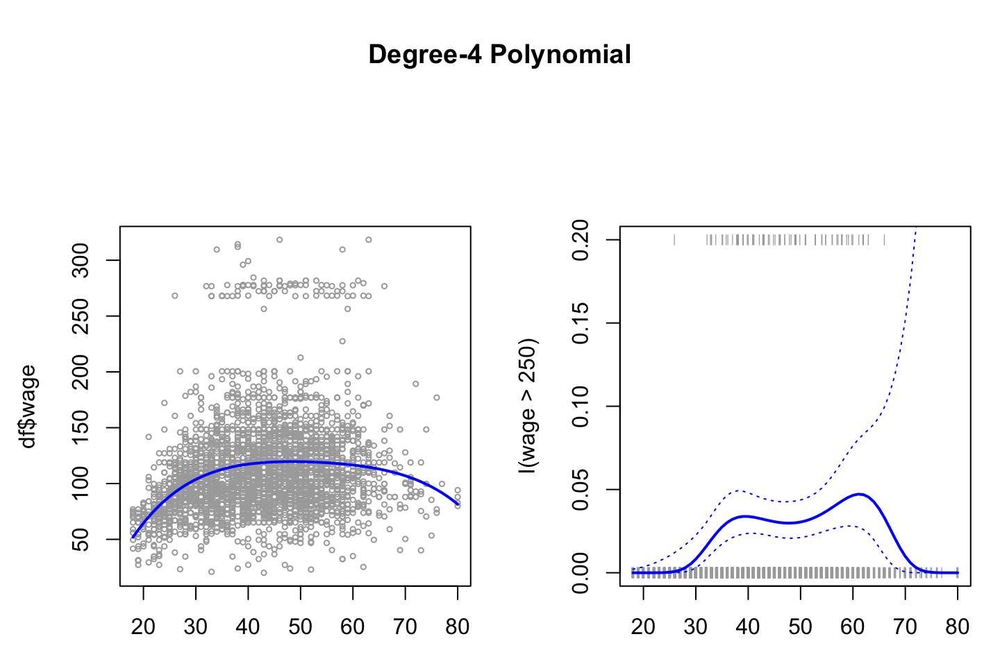
We see on the right hand panel that the all the observations that have a wage above 250 is in the top and all those below hare in the bottom of the visualization. Although at the tail, we aren’t able to conclude much, as confidence interval is really high, hence it can both be high and low earners.
jitter() is merely an approach to avoid observations to overlap each other.
2.3.1.3 Step function
To fit the step function we must do:
- Define the cuts,
cut()is able to automatically pick cutpoints. One could also usebreak()to define where the cuts should be. - Train the model. Notice, that
lm()will automatically create dummy variables for the ranges.
{table(cut(df$age,4)) %>% print()
fit <- lm(wage ~ cut(df$age,4)
,data = df)
coef(summary(fit)) %>% print()}##
## (17.9,33.5] (33.5,49] (49,64.5] (64.5,80.1]
## 750 1399 779 72
## Estimate Std. Error t value Pr(>|t|)
## (Intercept) 94.158392 1.476069 63.789970 0.000000e+00
## cut(df$age, 4)(33.5,49] 24.053491 1.829431 13.148074 1.982315e-38
## cut(df$age, 4)(49,64.5] 23.664559 2.067958 11.443444 1.040750e-29
## cut(df$age, 4)(64.5,80.1] 7.640592 4.987424 1.531972 1.256350e-01We see that the p value of the cuts are significant, not that we can use the p-values for much.
Notice, that the first range is the base level, thus it is also left out. We can then use the intercept as the average wage for all in the range of up to 33.5 years.
Hence for a 40 year old person, the model will say that he has an wage of 94 + 24 = 118
rm(list = ls())2.3.2 Splines
The different approaches to splines are presented in the following.
2.3.2.1 Basis Function Splines
library(ISLR)
df <- Wage
library(splines)
agelims <- range(df$age) #The min and max
age.grid <- seq(from = agelims[1],to = agelims[2]) #Creating a counter within the rangeThe splines library contain what we need. We introduce the following functions:
bs(): Basis functions for splines. Generates entire matrix of basis functions for splines with the specified set of knots.ns(): Natural splines.smooth.spline(): Used when fitting smoothing splines.loess(): When fitting local regression.
Note, that by default the splines will be choosen to be 3, this can also be found in the function documentation.
par(mfrow = c(1,1),oma = c(0,0,0,0))
fit.bs <- lm(wage ~ bs(age,knots = c(25,40,60)) #we just chose the knots randomly
,data = df)
pred.bs <- predict(fit.bs
,newdata = list(age = age.grid)
,se.fit = TRUE)
plot(df$age
,df$wage
,col = "gray")
lines(age.grid
,pred.bs$fit
,lwd = 2)
lines(age.grid
,pred.bs$fit+2*pred.bs$se
,lty = "dashed")
lines(age.grid
,pred.bs$fit-2*pred.bs$se
,lty = "dashed")
title("Splines - Basis Functions")
We see that the splines have been fitted to the data and notice that the tails have wider confidence intervals.
We can get the amount of degrees of freedom by calling the dim()function.
{
#Specifying the knots
dim(bs(age,knots = c(25,40,60))) %>% print()
#df can be specified instead of knots
dim(bs(age,df = 6)) %>% print()
}## [1] 3000 6
## [1] 3000 6We see that the two alternatives produce the same results.
Notice, that there are packages that will optimize the amount of knots.
We can assess where the bs() placed the knots, by calling the attr().
attr(bs(age,df=6),"knots")## 25% 50% 75%
## 33.75 42.00 51.00In this case, R chose the 25%, 50% and 75% quantiles.
2.3.2.2 Natural Splines
It similar to bs(), but it has an additional condition. I did not really get it.
The fitting procedure is the same, but now we just use ns() instead of bs().
fit.ns = lm(wage ~ ns(age
,df = 4 #Note, as with bs() we could have specified the knots instead of.
)
,data = df)
pred.ns = predict(fit.ns
,newdata = list(age=age.grid)
,se.fit = TRUE)
#Copy of old plot
plot(df$age
,df$wage
,col = "gray")
lines(age.grid
,pred.bs$fit
,lwd = 2)
lines(age.grid
,pred.bs$fit+2*pred.bs$se
,lty = "dashed")
lines(age.grid
,pred.bs$fit-2*pred.bs$se
,lty = "dashed")
#Adding natural splines
lines(age.grid
,pred.ns$fit
,col ="red"
,lwd =2)
title("Splines - Basis Functions + Natural Splines")
legend("topright",c("Basis","Natural"),lty = 1,col = c("Black","Red"),cex = 0.6)2.3.2.3 Smooth Splines
As we discovered in the first part of the chapter, it sets a knot at each observation, and then we will penalize the function with a lamda (\(\lambda\)), to avoid overfitting.
The code show the procedure.
#Hardcoding degrees of freedom
fit.ss <- smooth.spline(x = df$age,y = df$wage
,df = 16) #Remember that we must impose constraints
#Choosing smoothing param with CV
fit.ss2 <- smooth.spline (df$age
,df$wage
,cv = TRUE) #we choose cv instead of fixed amount of df
fit.ss2$df## [1] 6.794596We get sparsity hence we have degrees of freedom of 6.8. That is due to the tuning parameter which was found by the cross validation proces. We can find the specific lambda value with the following:
fit.ss2$lambda## [1] 0.02792303plot(age,wage
,xlim = agelims
,cex = .5
,col = "darkgrey")
title("Smoothing Spline")
lines(fit.ss,col = "red",lwd = 2)
lines(fit.ss2,col = "blue",lwd =2)
legend("topright",legend = c("16 DF","6.8 DF")
,col = c("red","blue")
,lty = 1
,lwd = 2
,cex = .8)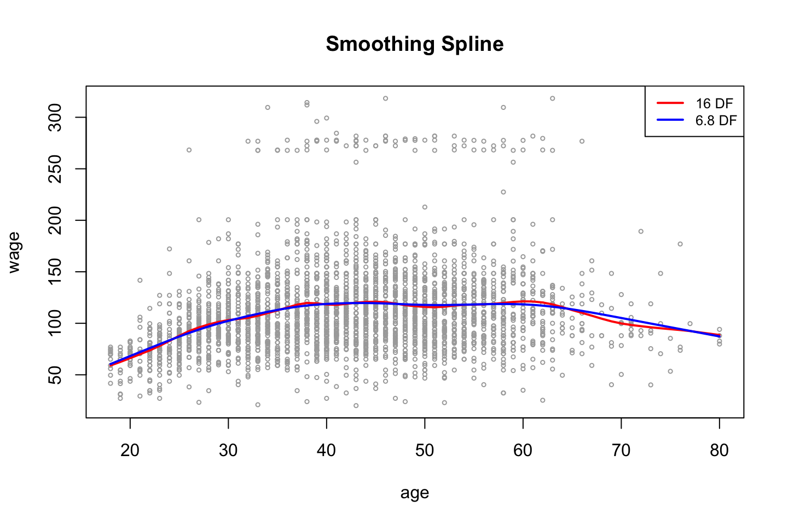
As expected, we see that the more complex model (highest amount of df) is the more flexible model.
Note: tuning parameter = \(\lambda\), where the CV seeks to choose the parameter that leads to the lowest error and return the df that leads to this level.
2.3.2.4 Local Regression
Recall that local regression makes a linear regression for the observations that are close to the observation under evaluation (\(x_0\)).
Thus we have to specify the span, the larger the span the smoother the fit, as we will include more observations.
NB: locfit library can also be used for fitting local regress
plot(x = df$age,y = df$wage
,xlim = agelims
,cex = .5
,col = "darkgrey")
title ("Local Regression")
fit.lr <- loess(wage ~ age
,span = .2 #Degree of smoothing / neighborhood to be included
,data = df)
fit.lr2 <- loess(wage ~ age
,span = .5 #Degree of smoothing / neighborhood to be included
,data = df)
lines(x = age.grid,y = predict(object = fit.lr,newdata = data.frame(age=age.grid))
,col = "red"
,lwd = 2)
lines(x = age.grid,y = predict(object = fit.lr2,newdata = data.frame(age=age.grid))
,col =" blue"
,lwd = 2)
legend(x = "topright"
,legend = c("Span = 0.2","Span = 0.5")
,col=c("red","blue")
,lty = 1
,lwd = 2
,cex = .8)
From the plot we also see that the model with the largest span has the smoothest fit.
2.3.3 GAMs
We want to predict wage, where year, age and education (as categorical) as predictors.
2.3.3.1 With only natural splines
According to the Hastie et al. (2013), 294, this is just a bunch of linear functions, hence we can merely apply lm(), see the following.
gam.m1 <- lm(wage ~ ns(year,df = 4) + ns(age,df = 5) + education #NOTICE, that we just use lm()
,data = df)
summary(gam.m1)##
## Call:
## lm(formula = wage ~ ns(year, df = 4) + ns(age, df = 5) + education,
## data = df)
##
## Residuals:
## Min 1Q Median 3Q Max
## -120.513 -19.608 -3.583 14.112 214.535
##
## Coefficients:
## Estimate Std. Error t value Pr(>|t|)
## (Intercept) 46.949 4.704 9.980 < 2e-16 ***
## ns(year, df = 4)1 8.625 3.466 2.488 0.01289 *
## ns(year, df = 4)2 3.762 2.959 1.271 0.20369
## ns(year, df = 4)3 8.127 4.211 1.930 0.05375 .
## ns(year, df = 4)4 6.806 2.397 2.840 0.00455 **
## ns(age, df = 5)1 45.170 4.193 10.771 < 2e-16 ***
## ns(age, df = 5)2 38.450 5.076 7.575 4.78e-14 ***
## ns(age, df = 5)3 34.239 4.383 7.813 7.69e-15 ***
## ns(age, df = 5)4 48.678 10.572 4.605 4.31e-06 ***
## ns(age, df = 5)5 6.557 8.367 0.784 0.43328
## education2. HS Grad 10.983 2.430 4.520 6.43e-06 ***
## education3. Some College 23.473 2.562 9.163 < 2e-16 ***
## education4. College Grad 38.314 2.547 15.042 < 2e-16 ***
## education5. Advanced Degree 62.554 2.761 22.654 < 2e-16 ***
## ---
## Signif. codes: 0 '***' 0.001 '**' 0.01 '*' 0.05 '.' 0.1 ' ' 1
##
## Residual standard error: 35.16 on 2986 degrees of freedom
## Multiple R-squared: 0.293, Adjusted R-squared: 0.2899
## F-statistic: 95.2 on 13 and 2986 DF, p-value: < 2.2e-16From the summary we see the variables that have been created and also the factor levels for education.
Again, we don’t have to interprete the coefficients, we just need to look at the shape.
2.3.3.2 With different splines
Now we have to apply the package gam.
This is the best approach.
library(gam)We can also construct a GAM model, that contains smoothing splines, that is done by calling s(). Where year and age will be included with up to 4 and 5 degrees of freedom.
gam.m3 <- gam(wage ~ s(year,df = 4) + s(age,df = 5) + education
,data = df)Remember, that GAM fits each variable while holding all other variables fixed. The actual fitting procedure is called backfitting, and fits variables by repeatedly updating the fit for each predictor (Hastie et al. 2013, 284–85). Hence, we create plots to interprete how.
par(mfrow = c(1,3))
plot(gam.m3 #Note, automatically identifies the GAM object, hence plots for each variable
,se = TRUE
,col ="blue")
(#fig:GAMPlotLab7.8.3)GAM plot and intepretation
Interpreting the plot: Recall that the plots assumes that we hold the other variables fixed, hence we see the following:
- Left: We see that holding education and age fixed, the wage tends to increase over the years, that is quite natural, e.g., because of inflation.
- Center: Holding year and education fixed, we see that the wage tends to be highest in the middle region around 40-45 years of age. That is also quite intuitive that the wage first increase and then decreasing as the person gets closer to the retirement age.
- Right: Holding year and age fixed, we see that the higher education you have, the higher will your wage be.
par(mfrow = c(1,3))
plot.Gam(gam.m1
,se = TRUE
,col = "red")
Figure 2.3: GAM of natural splines
Notice, that this plot looks very similar to @(fig:GAMPlotLab7.8.3).
This command could naturally also be used for the other GAM object, it is just that plot() does not automatically identify, that it is in fact intended to be interpretet as a GAM.
2.3.3.3 But what variables to include?
It looks as is year is rather linear. To make this assessment, we can apply an ANOVA test of the different combinations. Hence:
Note, the first model is nested in the second model (has the same variables), hence we can use ANOVA
#Excluding year
gam.m1 <- gam(wage ~ s(age,df = 5) + education
,data = df)
#Including year, but as a linear
gam.m2 <- gam(wage ~ year + s(age,df = 5) + education
,data = df)
anova(gam.m1,gam.m2,gam.m3,test = "F")| Resid. Df | Resid. Dev | Df | Deviance | F | Pr(>F) |
|---|---|---|---|---|---|
| 2990 | 3711731 | NA | NA | NA | NA |
| 2989 | 3693842 | 1.000000 | 17889.243 | 14.477130 | 0.0001447 |
| 2986 | 3689770 | 2.999989 | 4071.134 | 1.098212 | 0.3485661 |
We see that performance is significantly better going from model 1 to model 2, but on a five percent level, we are able to say, that we don’t gain anything with the third model, which is most complex model.
Thus, the linear constellation of year, with polynomials on age + education as factors, appear to be the best performing model.
With this in mind, it is interesting to assess the summary of the complex model:
summary(gam.m3)##
## Call: gam(formula = wage ~ s(year, df = 4) + s(age, df = 5) + education,
## data = df)
## Deviance Residuals:
## Min 1Q Median 3Q Max
## -119.43 -19.70 -3.33 14.17 213.48
##
## (Dispersion Parameter for gaussian family taken to be 1235.69)
##
## Null Deviance: 5222086 on 2999 degrees of freedom
## Residual Deviance: 3689770 on 2986 degrees of freedom
## AIC: 29887.75
##
## Number of Local Scoring Iterations: NA
##
## Anova for Parametric Effects
## Df Sum Sq Mean Sq F value Pr(>F)
## s(year, df = 4) 1 27162 27162 21.981 0.000002877 ***
## s(age, df = 5) 1 195338 195338 158.081 < 2.2e-16 ***
## education 4 1069726 267432 216.423 < 2.2e-16 ***
## Residuals 2986 3689770 1236
## ---
## Signif. codes: 0 '***' 0.001 '**' 0.01 '*' 0.05 '.' 0.1 ' ' 1
##
## Anova for Nonparametric Effects
## Npar Df Npar F Pr(F)
## (Intercept)
## s(year, df = 4) 3 1.086 0.3537
## s(age, df = 5) 4 32.380 <2e-16 ***
## education
## ---
## Signif. codes: 0 '***' 0.001 '**' 0.01 '*' 0.05 '.' 0.1 ' ' 1Looking at the section: “Anova for Nonparametric Effects,” we see that the smoothing spline on year, is not significant, hence it supports the conclusion from above, that we are better off, including the year as a linear variable.
Now we can make predictions.
#Predictions with linear year, non linear age and factors of education
preds <-predict(gam.m2
,newdata = df)2.3.3.4 GAM with local regression
We are also able to make GAM on other building blocks, for instance local regression, that will be shown in the following
For some reason the following cant be run.
#GAM with local regression
gam.lo <- gam(wage ~ s(df$year,df = 4) + lo(df$age,span = 0.7) + education
,data = df)
# plot.Gam(gam.lo #For some reason it cant be plotted
# ,se = TRUE
# ,col = "green")Making interactions in the local regression:
gam.lo.i <- gam(wage ~ lo(year,age,span = 0.5) + education
,data = df)
library(akima)
plot(gam.lo.i)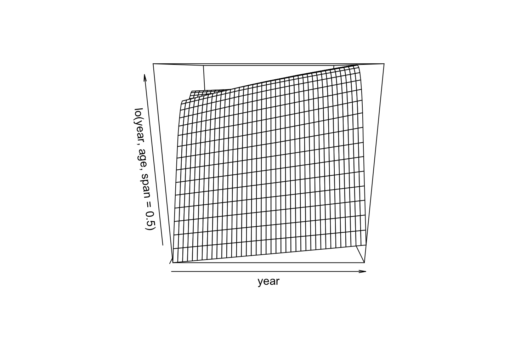
2.3.3.5 Logistic Regression
Plotting logistic regression GAM, here we can apply I() as previous used, to make the expression on the fly.
gam.lr <- gam(I(wage > 250) ~ year + s(age,df = 5) + education
,family = binomial
,data = df)
par(mfrow =c(1,3))
plot(gam.lr,se=T,col =" green ")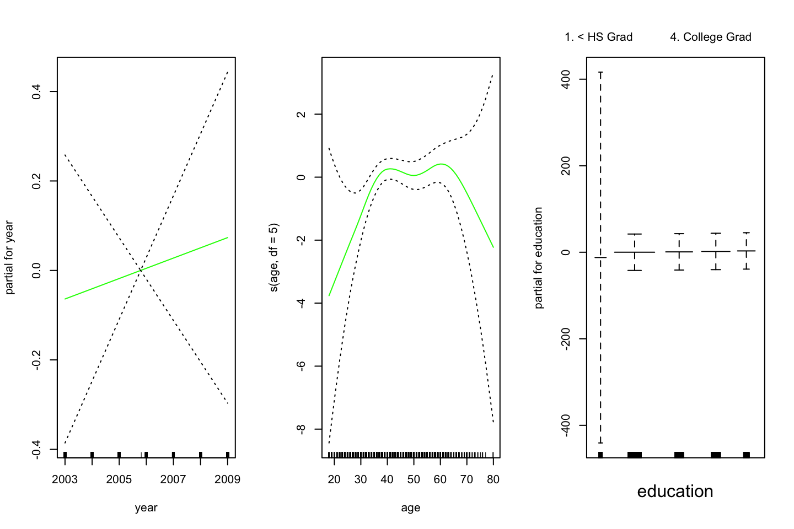
One could interprete the plot and assess each window to see how the variable influence the decision wether the observation is above or below. Remember that the outcome can be seen as probabilities, these can also be plotted to be shown the spread:
par(mfrow = c(1,1))
plot(gam.lr$fitted.values)
From th plot, we see that there is a tendency that the lower the education the lower the wage, the following table show how the high earners are distributed.
table(education,I(wage > 250))##
## education FALSE TRUE
## 1. < HS Grad 268 0
## 2. HS Grad 966 5
## 3. Some College 643 7
## 4. College Grad 663 22
## 5. Advanced Degree 381 45We see that there are no people with less than high school degree that earns more than 250.
To get more sensible result, we can remove the observations with a low degree, this will also show a more sensible result for the other degrees, see the following.
gam.lr.s = gam(I(wage > 250) ~ year + s(age,df = 5) + education
,family = binomial
,data = df
,subset = (education != "1. < HS Grad")) #removing people in the lowest group of education.
par(mfrow = c(1,3))
plot(gam.lr.s
,se = TRUE #Standard errors
,col =" green ")Do we need a nonlinear term for year? Use anova for comparing the previous model with a model that includes a smooth spline of year with df=4
We can do an ANOVA, but please notice, we use Chi Square now.
gam.y.s = gam(I(wage>250) ~ s(year, 4) + s(age,5) + education,family=binomial,data = df,subset=(education!="1. < HS Grad"))
anova(gam.lr.s,gam.y.s, test="Chisq") # Chi-square test as Dep variable is categorical| Resid. Df | Resid. Dev | Df | Deviance | Pr(>Chi) |
|---|---|---|---|---|
| 2722 | 602.4588 | NA | NA | NA |
| 2719 | 601.5718 | 2.999982 | 0.8869514 | 0.8285731 |
We do not need a non-linear term for year.
2.4 Exercises
2.4.1 Exercise 6
Purpose, to practice polynomial regression and step functions
library(ISLR)
df <- Wage2.4.1.1 6.a Polynomial Regression
We use orthogonal polynomials in the modeling process as we know that these are slightly better than raw polynomials due to the fact that this tend to avoid collinearity.
Training the model
library(boot) #For the cv.glm() function
set.seed(1337)
cv.error = rep (0,10)
for (i in seq(from = 1,to = length(cv.error),by = 1)) {
#Training
fit.i <- glm(wage ~ poly(age,i),data = df) # notice glm here in conjunction with cv.glm function
#Performing cross validation
cv.error[i] <- cv.glm(data = df,glmfit = fit.i,K = 10)$delta[1] #K fold CV, delta = prediction errer i.e. MSE
}
#Printing the
cv.error # MSE the CV errors of the five polynomials models## [1] 1675.056 1600.832 1594.505 1594.872 1594.608 1593.053 1594.069 1596.428
## [9] 1593.284 1595.530The vector above are all of the prediction errors computed in the loop.
which.min(cv.error)## [1] 6We see that the fifth prediction appear to yield the lowest MSE, but is it significantly different than e.g. forth or third order polynomial?
fit.1 <- glm(wage ~ poly(age,1),data = df)
fit.2 <- glm(wage ~ poly(age,2),data = df)
fit.3 <- glm(wage ~ poly(age,3),data = df)
fit.4 <- glm(wage ~ poly(age,4),data = df)
fit.5 <- glm(wage ~ poly(age,5),data = df)
anova(fit.1,fit.2,fit.3,fit.4,fit.5,test = "F")| Resid. Df | Resid. Dev | Df | Deviance | F | Pr(>F) |
|---|---|---|---|---|---|
| 2998 | 5022216 | NA | NA | NA | NA |
| 2997 | 4793430 | 1 | 228786.010 | 143.5931074 | 0.0000000 |
| 2996 | 4777674 | 1 | 15755.694 | 9.8887559 | 0.0016792 |
| 2995 | 4771604 | 1 | 6070.152 | 3.8098134 | 0.0510462 |
| 2994 | 4770322 | 1 | 1282.563 | 0.8049758 | 0.3696820 |
We can only use these as the models are nested as the variables are the same
Using the F test, we see that on a five percent level the 4th polynomial is not justified, but close to. This argues that we should select the third order of polynomials as that is the last where there is statistical evidence for lowering the residuals.
Thus we select a model with three polynomials. Plotting the errors, we also see that there does not happen much after the third polynomial. We also plotted the standard errors and thus we are able to select based on this.
plot(cv.error,type = "b")
min.point = min(cv.error)
sd.points = sd(cv.error)
abline(h=min.point + 0.2 * sd.points, col="red", lty="dashed") #0.2 is just a rule of thumb, could be anything
abline(h=min.point - 0.2 * sd.points, col="red", lty="dashed")
legend("topright", "0.2-standard deviation lines", lty="dashed", col="red")Thus, there is even more information supporting selecting three degrees of freedom.
Plotting the polynomial regression
This is done with the following procedure:
- Make a grid counting IDV (Age)
- Make predictions
- Make a plot with the variables
- Fit a line onto the predictions
- Perhaps calculate confidence levels and plot these
#Grid of X
age.grid <- seq(from = min(df$age),to = max(df$age),by = 1)
#Predictions
preds <- predict(object = fit.3
,newdata = list(age = age.grid) #Renaming age.grid to age
,se.fit = TRUE) #We want to produce confidence levels
#Plotting
plot(x = df$age,y = df$wage,col = "darkgrey",cex = 0.8)
grid()
lines(x = age.grid #We need to define the grid, otherwise the fit will not be alligned with the data
,y = preds$fit
,col = "red")
title("Polynomial of 3rd order")
2.4.1.2 6.b Step function
cuts <- 4
#Cutting the x variable
table(cut(df$age
,breaks = cuts))##
## (17.9,33.5] (33.5,49] (49,64.5] (64.5,80.1]
## 750 1399 779 72 #' Note, this only shows where the cuts lie and how many there are in each
#Fitting the step function
fit.step <- lm(wage ~ cut(df$age,4)
,data = df)
coef(summary(fit.step))## Estimate Std. Error t value Pr(>|t|)
## (Intercept) 94.158392 1.476069 63.789970 0.000000e+00
## cut(df$age, 4)(33.5,49] 24.053491 1.829431 13.148074 1.982315e-38
## cut(df$age, 4)(49,64.5] 23.664559 2.067958 11.443444 1.040750e-29
## cut(df$age, 4)(64.5,80.1] 7.640592 4.987424 1.531972 1.256350e-01We see that the the first cut (bin with people up to 33,5) have been left out. That is because they are contained in the intercept.
Now we can fit the step function
library(stats)
#Predictions
preds <- predict(object = fit.step
,newdata = list(age = age.grid)) #Renaming age.grid to age
#Plotting
# plot(x = df$age,y = df$wage,col = "darkgrey",cex = 0.8)
# grid()
# lines(age.grid
# ,preds
# ,col = "red")
# title("Step function of 3rd order")I need to check what she is doing, one could perhaps manually order the
2.4.2 Exercise 7
df <- WageEvaluating features other features to see how age respond hereon.
We can plot the variables agains each other, to see how they interact.
library(dplyr)
for (i in 1:10) {
plot(y = df$wage,x = df[,i],xlab = names(df)[i],ylab = "Wage")
grid()
names(df)[i] %>% title()
}
 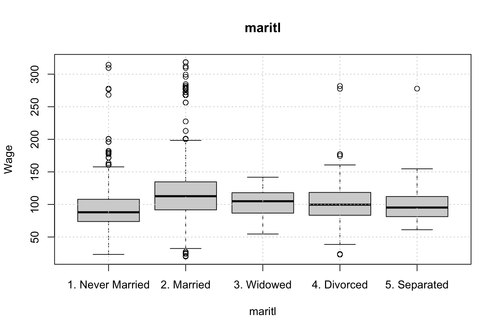
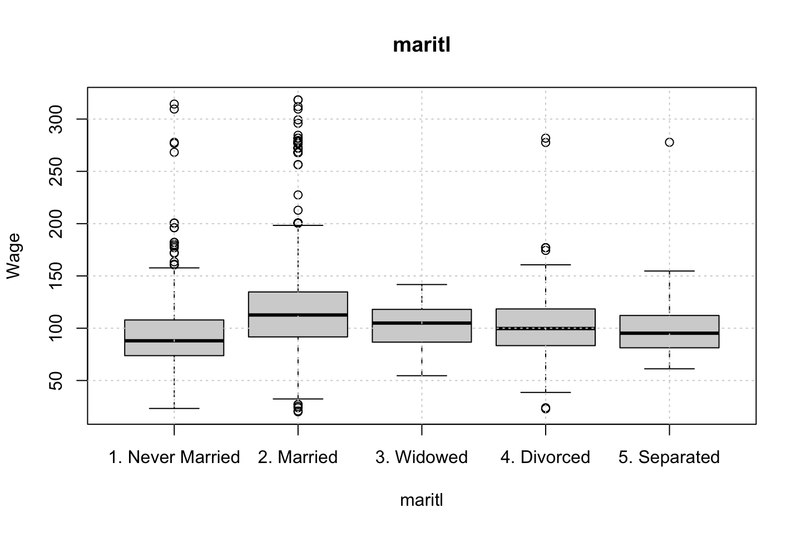

 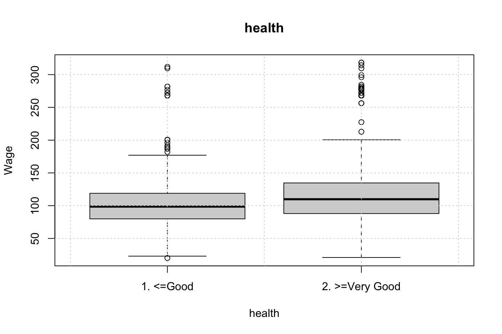
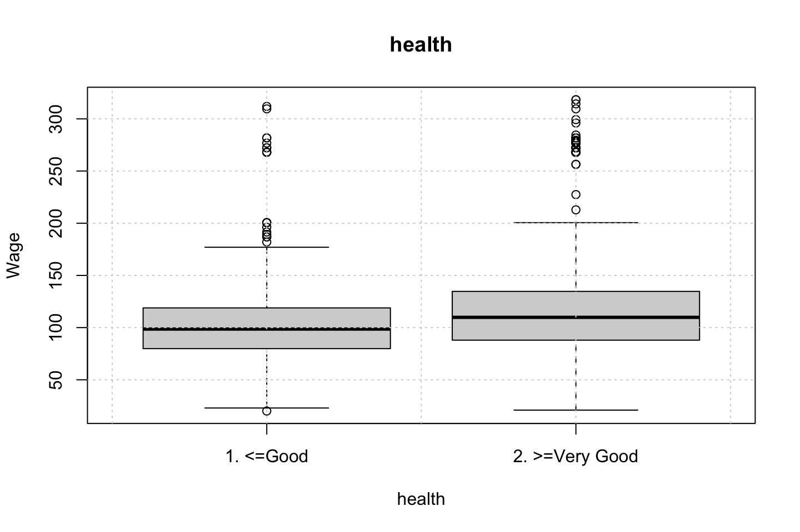

Looking at race, it appears as if there is some relationship between race and wage the same with maritial status. Region only has values in one category, jobclass appear to visually have different means. The same goes for health and health insurance. Naturally log of wage has a non linear relationship with wage. Although the variable is the same, thus it cant be used for much to predict wage levels.
Since all the variables of interest, and we haven’t worked with are all categorical, then we can’t really do any polynomial regression with the data, as they are all factors.
What one could do is a mutlivariate linear model with different factors, or step functions or perhaps GAM where a continous varaible with polynomials are included.
Therefore, I will not elaborate much more on this.
Ana made three different models, notice, that these are linear models, as the polynomial regression is not able to handle this.
fit1 = lm(wage ~ maritl, data = df)
deviance(fit1) # here deviance = RSS## [1] 4858941
fit2 = lm(wage ~ jobclass, data = df)
deviance(fit2)## [1] 4998547
fit3 = lm(wage ~ maritl + jobclass, data = df)
deviance(fit3)# Select model fit3 (smallest deviance)## [1] 4654752
summary(fit3)##
## Call:
## lm(formula = wage ~ maritl + jobclass, data = df)
##
## Residuals:
## Min 1Q Median 3Q Max
## -107.108 -22.689 -5.749 16.445 212.492
##
## Coefficients:
## Estimate Std. Error t value Pr(>|t|)
## (Intercept) 85.315 1.679 50.818 < 2e-16 ***
## maritl2. Married 25.356 1.776 14.279 < 2e-16 ***
## maritl3. Widowed 8.137 9.178 0.887 0.37541
## maritl4. Divorced 9.664 3.166 3.052 0.00229 **
## maritl5. Separated 7.189 5.539 1.298 0.19441
## jobclass2. Information 16.523 1.442 11.460 < 2e-16 ***
## ---
## Signif. codes: 0 '***' 0.001 '**' 0.01 '*' 0.05 '.' 0.1 ' ' 1
##
## Residual standard error: 39.43 on 2994 degrees of freedom
## Multiple R-squared: 0.1086, Adjusted R-squared: 0.1072
## F-statistic: 72.98 on 5 and 2994 DF, p-value: < 2.2e-16We can assess the groups with the contrasts function.
# To interpret first identify which is ref category
contrasts(Wage$maritl) # Never Married is the reference category## 2. Married 3. Widowed 4. Divorced 5. Separated
## 1. Never Married 0 0 0 0
## 2. Married 1 0 0 0
## 3. Widowed 0 1 0 0
## 4. Divorced 0 0 1 0
## 5. Separated 0 0 0 1contrasts(Wage$jobclass) # Industrial is the reference category## 2. Information
## 1. Industrial 0
## 2. Information 1Anova can also show the deviances etc. but notice, these does not appear to be neste d(JK note)?????
- The answer, fit 1 and fit 2 are nested into fit 3. Thus we dont compare fit 1 and fit 2, as these are not nested.
anova(fit1,fit2,fit3)| Res.Df | RSS | Df | Sum of Sq | F | Pr(>F) |
|---|---|---|---|---|---|
| 2995 | 4858941 | NA | NA | NA | NA |
| 2998 | 4998547 | -3 | -139606 | 29.93215 | 0 |
| 2994 | 4654752 | 4 | 343795 | 55.28341 | 0 |
Now we can check the residuals
par(mfrow = c(2,2))
plot(fit3)Looking at:
- The top left of the plot (residuals vs fitted), we would like these to be around 0.
- The top right, we want them to have a linear shape. This looks odd
Based on this, the model may be questionable. The solution:
- Exclude the extreme values
- Finding a variable that account for them.
2.4.3 Exercise 8
df <- AutoAre we able to predict how old a car is based on the variables at hand?
Hence year = DV
Name contains a lot of value, let us only use the first word, as that appear to be the brand. Therefore a loop is created to correct all the misspelled names.
brand <- strsplit(x = as.character(df$name),split = " ")
brand.name <- as.vector(rep(0,length(brand)))
for (i in c(1:length(brand))) {
brand.name[i] <- brand[[i]][1]
}
table(brand.name)## brand.name
## amc audi bmw buick cadillac
## 27 7 2 17 2
## capri chevroelt chevrolet chevy chrysler
## 1 1 43 3 6
## datsun dodge fiat ford hi
## 23 28 8 48 1
## honda maxda mazda mercedes mercedes-benz
## 13 2 10 1 2
## mercury nissan oldsmobile opel peugeot
## 11 1 10 4 8
## plymouth pontiac renault saab subaru
## 31 16 3 4 4
## toyota toyouta triumph vokswagen volkswagen
## 25 1 1 1 15
## volvo vw
## 6 6
misspelled <- matrix(byrow = TRUE,ncol = 2
,data = c("mercedes","mercedes-benz"
,"toyouta","toyota"
,"chevroelt","chevrolet"
,"maxda","mazda"
,"vokswagen","volkswagen"
,"vw","volkswagen"))
index <- as.vector("")
n <- 0
bn.list <- as.list(0)
brand.name.recent <- brand.name
for (i in c(misspelled[,1])) {
n <- n + 1
index <- rep(FALSE,length(brand.name))
index[brand.name == i] <- TRUE
bn.list[[n]] <- replace(x = brand.name.recent,list = index,values = misspelled[n,2])
brand.name.recent <- replace(x = brand.name.recent,list = index,values = misspelled[n,2])
}
df <- cbind(df[,-9],as.factor(bn.list[[6]]))
names(df)[names(df) == 'bn.list[[6]]'] <- "brand.name"Also we must convert origin to a factor.
df$origin <- as.factor(df$origin)Checking correlations.
The following can be run to see all the combinations
# par(mfrow = c(1,1))
# for (i in 1:dim(mm)[2]) {
# plot(y = df$year,x = mm[,i],xlab = names(mm)[i],ylab = "Year")
# grid()
# colnames(mm)[i] %>% title()
# }Before training the model, we can partition the data to test the model out of sample
set.seed(1337)
train.size <- round(x = nrow(df)*0.8,digits = 0) #Setting the training size
train.index <- sample(x = c(1:nrow(df)),size = train.size) #setting seed and creating vector for index
mm <- model.matrix(year ~ .,data = df)[,-1] #tried to make it mm first, to get rid of having variables that were in one partition but not the other.
year <- df$year
train.df <- as.data.frame(cbind(year,mm[train.index,])) #crating the training set
test.df <- as.data.frame(cbind(year,mm[-train.index,])) #creating the testing setlibrary(gam)
gam.m1 <- gam(year ~ s(train.df$mpg,df = 5) + s(train.df$cylinders,df = 5) + s(train.df$displacement,df = 5) + s(train.df$horsepower,df = 5) + s(train.df$weight,df = 5) + s(train.df$acceleration,df = 5) + .
,data = train.df)
summary(gam.m1)##
## Call: gam(formula = year ~ s(train.df$mpg, df = 5) + s(train.df$cylinders,
## df = 5) + s(train.df$displacement, df = 5) + s(train.df$horsepower,
## df = 5) + s(train.df$weight, df = 5) + s(train.df$acceleration,
## df = 5) + ., data = train.df)
## Deviance Residuals:
## Min 1Q Median 3Q Max
## -5.5818 -2.0705 -0.2068 2.0660 6.0843
##
## (Dispersion Parameter for gaussian family taken to be 8.889)
##
## Null Deviance: 2675.86 on 313 degrees of freedom
## Residual Deviance: 2266.693 on 255.0004 degrees of freedom
## AIC: 1631.771
##
## Number of Local Scoring Iterations: NA
##
## Anova for Parametric Effects
## Df Sum Sq Mean Sq F value
## s(train.df$mpg, df = 5) 1 10.71 10.707 1.2045
## s(train.df$cylinders, df = 5) 1 0.00 0.002 0.0003
## s(train.df$displacement, df = 5) 1 2.44 2.441 0.2747
## s(train.df$horsepower, df = 5) 1 0.13 0.134 0.0151
## s(train.df$weight, df = 5) 1 5.93 5.926 0.6667
## s(train.df$acceleration, df = 5) 1 1.52 1.517 0.1706
## origin2 1 16.05 16.050 1.8056
## origin3 1 11.10 11.097 1.2484
## `\\`as.factor(bn.list[[6]])\\`audi` 1 6.53 6.526 0.7342
## `\\`as.factor(bn.list[[6]])\\`bmw` 1 32.67 32.668 3.6751
## `\\`as.factor(bn.list[[6]])\\`buick` 1 8.31 8.307 0.9345
## `\\`as.factor(bn.list[[6]])\\`cadillac` 1 0.85 0.854 0.0960
## `\\`as.factor(bn.list[[6]])\\`capri` 1 0.00 0.003 0.0004
## `\\`as.factor(bn.list[[6]])\\`chevrolet` 1 0.23 0.230 0.0258
## `\\`as.factor(bn.list[[6]])\\`chevy` 1 0.00 0.003 0.0004
## `\\`as.factor(bn.list[[6]])\\`chrysler` 1 46.30 46.301 5.2088
## `\\`as.factor(bn.list[[6]])\\`datsun` 1 18.32 18.321 2.0611
## `\\`as.factor(bn.list[[6]])\\`dodge` 1 2.70 2.702 0.3040
## `\\`as.factor(bn.list[[6]])\\`fiat` 1 1.89 1.895 0.2132
## `\\`as.factor(bn.list[[6]])\\`ford` 1 25.85 25.847 2.9077
## `\\`as.factor(bn.list[[6]])\\`hi` 1 0.34 0.337 0.0379
## `\\`as.factor(bn.list[[6]])\\`honda` 1 3.40 3.401 0.3826
## `\\`as.factor(bn.list[[6]])\\`mazda` 1 4.99 4.986 0.5609
## `\\`as.factor(bn.list[[6]])\\`mercedes-benz` 1 0.01 0.014 0.0016
## `\\`as.factor(bn.list[[6]])\\`mercury` 1 0.31 0.313 0.0352
## `\\`as.factor(bn.list[[6]])\\`nissan` 1 3.68 3.684 0.4145
## `\\`as.factor(bn.list[[6]])\\`oldsmobile` 1 18.12 18.124 2.0389
## `\\`as.factor(bn.list[[6]])\\`opel` 1 0.30 0.303 0.0341
## `\\`as.factor(bn.list[[6]])\\`peugeot` 1 1.79 1.794 0.2018
## `\\`as.factor(bn.list[[6]])\\`plymouth` 1 0.53 0.527 0.0593
## `\\`as.factor(bn.list[[6]])\\`pontiac` 1 4.37 4.374 0.4921
## `\\`as.factor(bn.list[[6]])\\`renault` 1 16.53 16.533 1.8600
## `\\`as.factor(bn.list[[6]])\\`saab` 1 0.10 0.103 0.0115
## `\\`as.factor(bn.list[[6]])\\`subaru` 1 0.00 0.001 0.0001
## `\\`as.factor(bn.list[[6]])\\`volkswagen` 1 0.63 0.634 0.0713
## Residuals 255 2266.69 8.889
## Pr(>F)
## s(train.df$mpg, df = 5) 0.27346
## s(train.df$cylinders, df = 5) 0.98665
## s(train.df$displacement, df = 5) 0.60068
## s(train.df$horsepower, df = 5) 0.90226
## s(train.df$weight, df = 5) 0.41496
## s(train.df$acceleration, df = 5) 0.67989
## origin2 0.18023
## origin3 0.26491
## `\\`as.factor(bn.list[[6]])\\`audi` 0.39233
## `\\`as.factor(bn.list[[6]])\\`bmw` 0.05635 .
## `\\`as.factor(bn.list[[6]])\\`buick` 0.33460
## `\\`as.factor(bn.list[[6]])\\`cadillac` 0.75690
## `\\`as.factor(bn.list[[6]])\\`capri` 0.98494
## `\\`as.factor(bn.list[[6]])\\`chevrolet` 0.87244
## `\\`as.factor(bn.list[[6]])\\`chevy` 0.98454
## `\\`as.factor(bn.list[[6]])\\`chrysler` 0.02330 *
## `\\`as.factor(bn.list[[6]])\\`datsun` 0.15233
## `\\`as.factor(bn.list[[6]])\\`dodge` 0.58186
## `\\`as.factor(bn.list[[6]])\\`fiat` 0.64469
## `\\`as.factor(bn.list[[6]])\\`ford` 0.08937 .
## `\\`as.factor(bn.list[[6]])\\`hi` 0.84586
## `\\`as.factor(bn.list[[6]])\\`honda` 0.53679
## `\\`as.factor(bn.list[[6]])\\`mazda` 0.45459
## `\\`as.factor(bn.list[[6]])\\`mercedes-benz` 0.96840
## `\\`as.factor(bn.list[[6]])\\`mercury` 0.85133
## `\\`as.factor(bn.list[[6]])\\`nissan` 0.52028
## `\\`as.factor(bn.list[[6]])\\`oldsmobile` 0.15454
## `\\`as.factor(bn.list[[6]])\\`opel` 0.85372
## `\\`as.factor(bn.list[[6]])\\`peugeot` 0.65362
## `\\`as.factor(bn.list[[6]])\\`plymouth` 0.80775
## `\\`as.factor(bn.list[[6]])\\`pontiac` 0.48365
## `\\`as.factor(bn.list[[6]])\\`renault` 0.17383
## `\\`as.factor(bn.list[[6]])\\`saab` 0.91452
## `\\`as.factor(bn.list[[6]])\\`subaru` 0.99320
## `\\`as.factor(bn.list[[6]])\\`volkswagen` 0.78966
## Residuals
## ---
## Signif. codes: 0 '***' 0.001 '**' 0.01 '*' 0.05 '.' 0.1 ' ' 1
##
## Anova for Nonparametric Effects
## Npar Df Npar F Pr(F)
## (Intercept)
## s(train.df$mpg, df = 5) 4 0.97458 0.4219
## s(train.df$cylinders, df = 5) 3 0.63467 0.5933
## s(train.df$displacement, df = 5) 4 1.72358 0.1452
## s(train.df$horsepower, df = 5) 4 1.13935 0.3384
## s(train.df$weight, df = 5) 4 0.69772 0.5941
## s(train.df$acceleration, df = 5) 4 0.93342 0.4451
## mpg
## cylinders
## displacement
## horsepower
## weight
## acceleration
## origin2
## origin3
## `\\`as.factor(bn.list[[6]])\\`audi`
## `\\`as.factor(bn.list[[6]])\\`bmw`
## `\\`as.factor(bn.list[[6]])\\`buick`
## `\\`as.factor(bn.list[[6]])\\`cadillac`
## `\\`as.factor(bn.list[[6]])\\`capri`
## `\\`as.factor(bn.list[[6]])\\`chevrolet`
## `\\`as.factor(bn.list[[6]])\\`chevy`
## `\\`as.factor(bn.list[[6]])\\`chrysler`
## `\\`as.factor(bn.list[[6]])\\`datsun`
## `\\`as.factor(bn.list[[6]])\\`dodge`
## `\\`as.factor(bn.list[[6]])\\`fiat`
## `\\`as.factor(bn.list[[6]])\\`ford`
## `\\`as.factor(bn.list[[6]])\\`hi`
## `\\`as.factor(bn.list[[6]])\\`honda`
## `\\`as.factor(bn.list[[6]])\\`mazda`
## `\\`as.factor(bn.list[[6]])\\`mercedes-benz`
## `\\`as.factor(bn.list[[6]])\\`mercury`
## `\\`as.factor(bn.list[[6]])\\`nissan`
## `\\`as.factor(bn.list[[6]])\\`oldsmobile`
## `\\`as.factor(bn.list[[6]])\\`opel`
## `\\`as.factor(bn.list[[6]])\\`peugeot`
## `\\`as.factor(bn.list[[6]])\\`plymouth`
## `\\`as.factor(bn.list[[6]])\\`pontiac`
## `\\`as.factor(bn.list[[6]])\\`renault`
## `\\`as.factor(bn.list[[6]])\\`saab`
## `\\`as.factor(bn.list[[6]])\\`subaru`
## `\\`as.factor(bn.list[[6]])\\`toyota`
## `\\`as.factor(bn.list[[6]])\\`triumph`
## `\\`as.factor(bn.list[[6]])\\`volkswagen`
## `\\`as.factor(bn.list[[6]])\\`volvo`It appears as if non of the parameters are good predictors.
Then one could try out other models, or perhaps it is just very difficult with the data at hand to predict the year of the car.
2.4.4 Exercise 9
library(MASS)
df <- Boston
df <- as.data.frame(cbind(df$nox,df$dis))
colnames(df) <- c("nox","dis")2.4.4.1 (a) using poly function to fit cubic polynomial regression
fit.poly <- lm(nox ~ poly(dis,3),data = df)
summary(fit.poly)##
## Call:
## lm(formula = nox ~ poly(dis, 3), data = df)
##
## Residuals:
## Min 1Q Median 3Q Max
## -0.121130 -0.040619 -0.009738 0.023385 0.194904
##
## Coefficients:
## Estimate Std. Error t value Pr(>|t|)
## (Intercept) 0.554695 0.002759 201.021 < 2e-16 ***
## poly(dis, 3)1 -2.003096 0.062071 -32.271 < 2e-16 ***
## poly(dis, 3)2 0.856330 0.062071 13.796 < 2e-16 ***
## poly(dis, 3)3 -0.318049 0.062071 -5.124 0.000000427 ***
## ---
## Signif. codes: 0 '***' 0.001 '**' 0.01 '*' 0.05 '.' 0.1 ' ' 1
##
## Residual standard error: 0.06207 on 502 degrees of freedom
## Multiple R-squared: 0.7148, Adjusted R-squared: 0.7131
## F-statistic: 419.3 on 3 and 502 DF, p-value: < 2.2e-16Remember that we are not interested in the coefficients as they are misleading, thus we want to look at the shape.
The table above is mostly presented for explanatory reasons.
As we are interested in the curve, we can fit that.
#Defining range
dislims <- range(df$dis)
n <- (dislims[2]-dislims[1])/nrow(df)
dis.grid <- seq(from = dislims[1],to = dislims[2],by = n)
#Predictions for the plot
preds <- predict(object = fit.poly,newdata = list(dis = dis.grid))
#Plotting
plot(nox ~ dis, data = df, col = "darkgrey")
grid()
lines(x = dis.grid,y = preds, col = "blue",lwd = 2)
title("Cubic polynomial")
2.4.4.2 (b) Plotting polynomial fits for a range of polynomials
models <- list()
RSS <- 0
for (d in 1:10) {
models[[d]] <- lm(nox ~ poly(dis,d),data = df)
RSS[d] <- sum(residuals(models[[d]])^2)
}
plot(RSS,type = "b")
points(x = which.min(RSS),y = RSS[which.min(RSS)],col = "red",pch = 19)
grid()
abline(h = min(RSS),col = "blue",lty = 2)
title("In-sample error")
We see that the RSS decrease with complexity, that it as expected, as we fit to the in sample data. We could do this with a partition of the data to see out of performance instead.
2.4.4.3 (c) Using CV to select best degree of d
Here we run a loop with cross validation to see how the different order of d performs. As the partitions are randomly selected, we preduce 10 simulations to see which orders that tend to occur most often.
models <- list()
RSS <- 0
CV.RSS <- 0
CV.RSS.sim <- 0
for (i in 1:20) {
for (d in 1:10) {
models[[d]] <- glm(nox ~ poly(dis,d),data = df)
RSS[d] <- sum(residuals(models[[d]])^2)
CV.RSS[d] <- cv.glm(data = df,glmfit = models[[d]],K = 10)$delta[2] #Delta = prediction error (adjusted)
}
CV.RSS.sim[i] <- which.min(CV.RSS)
}
#Plotting prediction error
plot(CV.RSS,type = "b")
points(x = which.min(CV.RSS),y = CV.RSS[which.min(CV.RSS)],col = "red",pch = 19)
grid()
abline(h = min(CV.RSS),col = "blue",lty = 2)
title("CV K = 10 prediction error")
#Plotting simulations
barplot(table(CV.RSS.sim),xlab = "Degree of d",ylab = "Frequency")
abline(h = 0)
title("CV K = 10, Iterations = 20")In these simulations we see that the best fit is likely to be with using .
It is actually quite interesting that a model with 10 degrees of d is as competitive as 4 in this example, although the cubic model is far superior than the other models.
2.4.4.4 (d) Use bs() to fit a regression spline
par(mfrow = c(1,1))
fit.bs <- lm(nox ~ bs(dis,df = 4),data = df) #Note as degree is not defined, default = 3
preds <- predict(object = fit.bs,newdata = list(dis = dis.grid))
plot(x = df$dis,y = df$nox,col = "darkgrey",pch = 20,ylab = "nox",xlab = "dis")
lines(x = dis.grid,y = preds,col = "blue",lwd = 2)
grid()
title("Regression Spline df = 4")
abline(v = 3.20745,col = "red",lty = 2) #This is the cut, found in next chunk
legend(x = "topright",legend = c("fit","cut"),lty = 1:2,col = c("blue","red"))
Notice that we merely specified the amount of df that we wanted. The function merely specified them automatically. We can interpret these, by using dim() and attr().
print(dim(bs(df$dis,df = 4)))## [1] 506 4attr(bs(df$dis,df = 4),"knots")## 50%
## 3.20745We see that a model with 4 degrees of freedom yields one cut. Where the model put this at 50%, hence the first half (up to 3.20745). For simplicity, this cut has been added to the plot above, to show where the spline is split.
2.4.4.5 (e) Now fit a regression spline
par(mfrow = c(2,2))
for (d in 4:7) {
#The fit + preds
fit.bs <- lm(nox ~ bs(dis,df = d,degree = 3),data = df)
preds <- predict(object = fit.bs,newdata = list(dis = dis.grid))
#Cut
cut <- attr(bs(df$dis,df = d),"knots")
#Plot
plot(x = df$dis,y = df$nox,col = "darkgrey",pch = 20,ylab = "nox",xlab = "dis")
lines(x = dis.grid,y = preds,col = "blue",lwd = 2)
grid()
title(paste("Cubic Regression Spline, df =",d))
abline(v = cut,col = "red",lty = 2) #This is the cut, found in next chunk
legend(x = "topright",legend = c("fit","cut"),lty = 1:2,col = c("blue","red"))
}
We start at four degrees of freedom as a model with only three degrees of freedom, hence cubic regression (three orders of polynomials) = three degrees of freedom (this has to be fact checked).
As we add complexity with knots we also adds degrees of freedom, where we add one degree of freedom for each cut, hence for the cubic spline with 7 degrees of freedom, four cuts and three polynomials (this has to be fact checked).
2.4.4.6 (f) Perform cross-validation, to select degrees
models <- list()
RSS <- 0
CV.RSS.sim <- 0
for (i in 1:20) {
for (d in 4:15) {
models[[d]] <- glm(nox ~ bs(dis,df = d,degree = 3),data = df)
RSS[d] <- sum(residuals(models[[d]])^2)
CV.RSS[d] <- cv.glm(data = df,glmfit = models[[d]],K = 10)$delta[2] #Delta = prediction error (adjusted)
}
CV.RSS.sim[i] <- which.min(CV.RSS)
}
par(mfrow = c(1,1),mar = c(5,4.5,4.5,2.1),oma = c(0,0,0,0))
#Plotting prediction error
plot(CV.RSS,type = "b")
points(x = which.min(CV.RSS),y = CV.RSS[which.min(CV.RSS)],col = "red",pch = 19)
grid()
abline(h = min(CV.RSS),col = "blue",lty = 2)
title("CV K = 10 prediction error")
#Plotting simulations
barplot(table(CV.RSS.sim),xlab = "Degree of d",ylab = "Frequency")
abline(h = 0)
title("CV K = 10, Iterations = 20")First we see the last iteration and the prediction error hereof. Overall we see that it tend to be the rather complex models tend to be
2.4.5 Exercise 10
2.4.5.1 (a) Partitioning the data
#Loading
df <- College
#Partitioning
set.seed(1337)
train.size <- round(x = nrow(df)*0.8,digits = 0) #Setting the training size
train.index <- sample(x = c(1:nrow(df)),size = train.size) #setting seed and creating vector for index
train.df <- df[train.index,] #crating the training set
test.df <- df[-train.index,] #creating the testing set
rm(train.size)
rm(train.index)Finding the best subset using forward selection
reg_null <- lm(Outstate ~ 1,data = train.df) #The null models
reg_full <- lm(Outstate ~ .,data = train.df) #The full model
step.for <- stepAIC(direction = "forward",object = reg_null,trace = TRUE,scope = list(upper = reg_full,lower = reg_null)) #This could also have been done with regsubsets()## Start: AIC=10345.68
## Outstate ~ 1
##
## Df Sum of Sq RSS AIC
## + Expend 1 4629213116 5745572675 9980.1
## + Room.Board 1 4590249421 5784536370 9984.3
## + Grad.Rate 1 3627082940 6747702852 10080.1
## + Top10perc 1 3457381465 6917404327 10095.6
## + perc.alumni 1 3450011987 6924773804 10096.2
## + S.F.Ratio 1 3359826734 7014959058 10104.3
## + Private 1 3075173999 7299611793 10129.0
## + Top25perc 1 2644625673 7730160118 10164.7
## + Terminal 1 2115825269 8258960523 10205.8
## + PhD 1 1886906305 8487879487 10222.8
## + Personal 1 735337851 9639447941 10301.9
## + P.Undergrad 1 571871111 9802914681 10312.4
## + F.Undergrad 1 404016737 9970769054 10323.0
## + Enroll 1 180722874 10194062918 10336.7
## + Apps 1 52841694 10321944097 10344.5
## <none> 10374785791 10345.7
## + Books 1 14584993 10360200799 10346.8
## + Accept 1 90338 10374695453 10347.7
##
## Step: AIC=9980.11
## Outstate ~ Expend
##
## Df Sum of Sq RSS AIC
## + Private 1 1549696145 4195876531 9786.6
## + Room.Board 1 1512070540 4233502135 9792.1
## + Grad.Rate 1 1328830834 4416741842 9818.5
## + perc.alumni 1 1089768014 4655804661 9851.3
## + Personal 1 501146318 5244426358 9925.3
## + S.F.Ratio 1 464809224 5280763451 9929.6
## + F.Undergrad 1 454756490 5290816185 9930.8
## + P.Undergrad 1 349207380 5396365295 9943.1
## + Top10perc 1 346779721 5398792955 9943.4
## + Top25perc 1 345553704 5400018971 9943.5
## + Enroll 1 331862326 5413710349 9945.1
## + Terminal 1 269786468 5475786207 9952.2
## + PhD 1 210830779 5534741896 9958.9
## + Apps 1 110876800 5634695875 9970.0
## + Accept 1 85558833 5660013842 9972.8
## + Books 1 18850616 5726722060 9980.1
## <none> 5745572675 9980.1
##
## Step: AIC=9786.59
## Outstate ~ Expend + Private
##
## Df Sum of Sq RSS AIC
## + Room.Board 1 876836109 3319040422 9642.8
## + Terminal 1 743790341 3452086190 9667.2
## + Grad.Rate 1 703122598 3492753933 9674.5
## + PhD 1 693220664 3502655866 9676.3
## + perc.alumni 1 408270963 3787605568 9724.9
## + Top25perc 1 401010315 3794866215 9726.1
## + Top10perc 1 319956878 3875919653 9739.3
## + Accept 1 152840390 4043036140 9765.5
## + Personal 1 128047157 4067829374 9769.3
## + Apps 1 118364448 4077512083 9770.8
## + Enroll 1 37847497 4158029034 9783.0
## + S.F.Ratio 1 28944091 4166932439 9784.3
## + F.Undergrad 1 16848576 4179027955 9786.1
## <none> 4195876531 9786.6
## + Books 1 5437161 4190439370 9787.8
## + P.Undergrad 1 3721562 4192154968 9788.0
##
## Step: AIC=9642.78
## Outstate ~ Expend + Private + Room.Board
##
## Df Sum of Sq RSS AIC
## + perc.alumni 1 419740777 2899299645 9560.7
## + Grad.Rate 1 412477957 2906562465 9562.2
## + PhD 1 379305385 2939735036 9569.3
## + Terminal 1 369656216 2949384206 9571.3
## + Top25perc 1 311299881 3007740541 9583.5
## + Top10perc 1 280108774 3038931648 9589.9
## + Personal 1 84780679 3234259743 9628.7
## + Accept 1 42471882 3276568540 9636.8
## + Books 1 35245677 3283794745 9638.1
## + P.Undergrad 1 29148614 3289891808 9639.3
## + S.F.Ratio 1 27660641 3291379781 9639.6
## + Apps 1 24109291 3294931131 9640.2
## + Enroll 1 12561816 3306478606 9642.4
## <none> 3319040422 9642.8
## + F.Undergrad 1 2021439 3317018983 9644.4
##
## Step: AIC=9560.68
## Outstate ~ Expend + Private + Room.Board + perc.alumni
##
## Df Sum of Sq RSS AIC
## + PhD 1 248319695 2650979950 9507.0
## + Terminal 1 241588269 2657711376 9508.6
## + Grad.Rate 1 194250957 2705048688 9519.5
## + Top25perc 1 146504265 2752795380 9530.4
## + Top10perc 1 124783671 2774515974 9535.3
## + Accept 1 68407796 2830891849 9547.8
## + Apps 1 37351605 2861948040 9554.6
## + Personal 1 22021761 2877277884 9557.9
## + Enroll 1 21250394 2878049251 9558.1
## + Books 1 16826748 2882472897 9559.1
## + S.F.Ratio 1 12022816 2887276829 9560.1
## <none> 2899299645 9560.7
## + F.Undergrad 1 9250654 2890048991 9560.7
## + P.Undergrad 1 5862353 2893437292 9561.4
##
## Step: AIC=9506.99
## Outstate ~ Expend + Private + Room.Board + perc.alumni + PhD
##
## Df Sum of Sq RSS AIC
## + Grad.Rate 1 138096695 2512883255 9475.7
## + Top25perc 1 42169169 2608810781 9499.0
## + Top10perc 1 35379421 2615600528 9500.6
## + Terminal 1 26636450 2624343499 9502.7
## + Personal 1 26014281 2624965669 9502.9
## + Accept 1 25856057 2625123892 9502.9
## + S.F.Ratio 1 20504248 2630475702 9504.2
## + P.Undergrad 1 15565029 2635414921 9505.3
## + Books 1 14472738 2636507212 9505.6
## + Apps 1 10845099 2640134851 9506.4
## <none> 2650979950 9507.0
## + Enroll 1 1715151 2649264798 9508.6
## + F.Undergrad 1 235072 2650744878 9508.9
##
## Step: AIC=9475.71
## Outstate ~ Expend + Private + Room.Board + perc.alumni + PhD +
## Grad.Rate
##
## Df Sum of Sq RSS AIC
## + Terminal 1 29069264 2483813991 9470.5
## + S.F.Ratio 1 23980164 2488903091 9471.7
## + Personal 1 15282065 2497601190 9473.9
## + Top25perc 1 14080081 2498803174 9474.2
## + Books 1 13787420 2499095834 9474.3
## + Top10perc 1 10584708 2502298546 9475.1
## + Accept 1 10459352 2502423903 9475.1
## <none> 2512883255 9475.7
## + P.Undergrad 1 5510297 2507372958 9476.3
## + F.Undergrad 1 1533109 2511350146 9477.3
## + Apps 1 974955 2511908300 9477.5
## + Enroll 1 16562 2512866693 9477.7
##
## Step: AIC=9470.48
## Outstate ~ Expend + Private + Room.Board + perc.alumni + PhD +
## Grad.Rate + Terminal
##
## Df Sum of Sq RSS AIC
## + S.F.Ratio 1 21234904 2462579087 9467.1
## + Books 1 18033724 2465780267 9467.9
## + Personal 1 17438422 2466375568 9468.1
## + Top25perc 1 11061012 2472752979 9469.7
## + Top10perc 1 10503050 2473310941 9469.8
## + Accept 1 8692072 2475121919 9470.3
## <none> 2483813991 9470.5
## + P.Undergrad 1 6212554 2477601437 9470.9
## + F.Undergrad 1 2755569 2481058422 9471.8
## + Apps 1 617630 2483196361 9472.3
## + Enroll 1 29501 2483784490 9472.5
##
## Step: AIC=9467.13
## Outstate ~ Expend + Private + Room.Board + perc.alumni + PhD +
## Grad.Rate + Terminal + S.F.Ratio
##
## Df Sum of Sq RSS AIC
## + Personal 1 19556149 2443022938 9464.2
## + Books 1 17642529 2444936558 9464.7
## + Accept 1 12220653 2450358434 9466.0
## + Top25perc 1 10915780 2451663307 9466.4
## + Top10perc 1 9884752 2452694335 9466.6
## <none> 2462579087 9467.1
## + P.Undergrad 1 5425216 2457153871 9467.8
## + Apps 1 1708616 2460870471 9468.7
## + F.Undergrad 1 1057807 2461521279 9468.9
## + Enroll 1 169448 2462409639 9469.1
##
## Step: AIC=9464.18
## Outstate ~ Expend + Private + Room.Board + perc.alumni + PhD +
## Grad.Rate + Terminal + S.F.Ratio + Personal
##
## Df Sum of Sq RSS AIC
## + Accept 1 16268824 2426754113 9462.0
## + Books 1 12585987 2430436951 9463.0
## + Top25perc 1 11662715 2431360223 9463.2
## + Top10perc 1 10776478 2432246460 9463.4
## <none> 2443022938 9464.2
## + Apps 1 3319537 2439703401 9465.3
## + P.Undergrad 1 2234491 2440788447 9465.6
## + Enroll 1 1504102 2441518836 9465.8
## + F.Undergrad 1 17762 2443005175 9466.2
##
## Step: AIC=9462.02
## Outstate ~ Expend + Private + Room.Board + perc.alumni + PhD +
## Grad.Rate + Terminal + S.F.Ratio + Personal + Accept
##
## Df Sum of Sq RSS AIC
## + F.Undergrad 1 34267884 2392486229 9455.2
## + Apps 1 28349962 2398404152 9456.7
## + Enroll 1 21722919 2405031194 9458.4
## + Books 1 13764794 2412989319 9460.5
## + Top10perc 1 9007820 2417746293 9461.7
## + Top25perc 1 8657418 2418096695 9461.8
## + P.Undergrad 1 7813774 2418940340 9462.0
## <none> 2426754113 9462.0
##
## Step: AIC=9455.17
## Outstate ~ Expend + Private + Room.Board + perc.alumni + PhD +
## Grad.Rate + Terminal + S.F.Ratio + Personal + Accept + F.Undergrad
##
## Df Sum of Sq RSS AIC
## + Apps 1 33237860 2359248369 9448.5
## + Top10perc 1 14141658 2378344572 9453.5
## + Top25perc 1 13224939 2379261290 9453.7
## + Books 1 11896812 2380589418 9454.1
## <none> 2392486229 9455.2
## + P.Undergrad 1 793001 2391693228 9457.0
## + Enroll 1 19024 2392467206 9457.2
##
## Step: AIC=9448.47
## Outstate ~ Expend + Private + Room.Board + perc.alumni + PhD +
## Grad.Rate + Terminal + S.F.Ratio + Personal + Accept + F.Undergrad +
## Apps
##
## Df Sum of Sq RSS AIC
## + Top10perc 1 34199271 2325049099 9441.4
## + Top25perc 1 24042385 2335205985 9444.1
## + Books 1 10661970 2348586399 9447.7
## <none> 2359248369 9448.5
## + Enroll 1 1072888 2358175482 9450.2
## + P.Undergrad 1 755069 2358493300 9450.3
##
## Step: AIC=9441.39
## Outstate ~ Expend + Private + Room.Board + perc.alumni + PhD +
## Grad.Rate + Terminal + S.F.Ratio + Personal + Accept + F.Undergrad +
## Apps + Top10perc
##
## Df Sum of Sq RSS AIC
## + Books 1 15416176 2309632923 9439.3
## <none> 2325049099 9441.4
## + Enroll 1 3260513 2321788586 9442.5
## + Top25perc 1 166941 2324882158 9443.3
## + P.Undergrad 1 256 2325048842 9443.4
##
## Step: AIC=9439.25
## Outstate ~ Expend + Private + Room.Board + perc.alumni + PhD +
## Grad.Rate + Terminal + S.F.Ratio + Personal + Accept + F.Undergrad +
## Apps + Top10perc + Books
##
## Df Sum of Sq RSS AIC
## <none> 2309632923 9439.3
## + Enroll 1 3152187 2306480736 9440.4
## + Top25perc 1 252598 2309380324 9441.2
## + P.Undergrad 1 53 2309632870 9441.3summary(step.for)##
## Call:
## lm(formula = Outstate ~ Expend + Private + Room.Board + perc.alumni +
## PhD + Grad.Rate + Terminal + S.F.Ratio + Personal + Accept +
## F.Undergrad + Apps + Top10perc + Books, data = train.df)
##
## Residuals:
## Min 1Q Median 3Q Max
## -6206 -1233 10 1325 5390
##
## Coefficients:
## Estimate Std. Error t value Pr(>|t|)
## (Intercept) -2286.93077 865.13003 -2.643 0.008418 **
## Expend 0.16360 0.02379 6.878 1.51e-11 ***
## PrivateYes 2242.59519 268.94651 8.338 5.06e-16 ***
## Room.Board 0.94499 0.09401 10.052 < 2e-16 ***
## perc.alumni 42.13604 8.50315 4.955 9.38e-07 ***
## PhD 14.09387 10.16544 1.386 0.166118
## Grad.Rate 28.68532 6.13106 4.679 3.56e-06 ***
## Terminal 32.16147 11.27001 2.854 0.004468 **
## S.F.Ratio -61.88646 28.54270 -2.168 0.030531 *
## Personal -0.19357 0.13361 -1.449 0.147935
## Accept 0.67907 0.13205 5.143 3.66e-07 ***
## F.Undergrad -0.14101 0.03952 -3.568 0.000388 ***
## Apps -0.28245 0.07533 -3.749 0.000194 ***
## Top10perc 23.14400 7.23340 3.200 0.001448 **
## Books -1.00042 0.49701 -2.013 0.044572 *
## ---
## Signif. codes: 0 '***' 0.001 '**' 0.01 '*' 0.05 '.' 0.1 ' ' 1
##
## Residual standard error: 1951 on 607 degrees of freedom
## Multiple R-squared: 0.7774, Adjusted R-squared: 0.7722
## F-statistic: 151.4 on 14 and 607 DF, p-value: < 2.2e-16NOTE: Ana’s solution has a nice example with regsubsets, where she applies standard errors to see if the results of the different combinations are the same.
We see that the forward selection decides on 14 variables to be included
2.4.5.2 (b) Fitting a GAM
par(mfrow = c(1,1))
library(forecast)
best.formula <- formula(step.for)
fit.gam <-gam::gam(formula = best.formula,data = train.df) #Notice that it is linear
preds <- predict(object = fit.gam,newdata = test.df)
plot(x = preds,y = preds-test.df$Outstate,ylab = "Residuals",xlab = "Predicted values")
From the plot we see that in general we have a resdiausl around 0 withinn +/- 5000. Also the residuals do look rather normal. Although one could argue that the variance is a but smaller in the lower region of the predicted value, and it does in fact appear as if we are under estimating these result.
We can interprete how Outstate responds in the following:
par(mfrow = c(4,4))
plot(fit.gam #Note, automatically identifies the GAM object, hence plots for each variable
,se = TRUE
,col ="blue")
Interpreting the plot: Recall that the plots assumes that we hold the other variables fixed, hence we see the following:
- e.g., Expend: We see that holding the other variables fixed, the outstate tends to increase over the expenditure.
- e.g., Apps: I assume that this is applicants, we see that holder the other variables fixed, outstate students tend to decrease as amount of applicants decrease.
We can also assess the overall accuracy
accuracy(preds,x = test.df$Outstate)## ME RMSE MAE MPE MAPE
## Test set 85.03267 2041.19 1587.582 -1.863903 16.86691We see that the MAE is 1587, where the mean absolute percentage error is almost 17%, hence it appear to be rather high.
2.4.5.3 (c) Evaluating on the test set
This is what was done above. It is expected that if we compared applying on the train and test set, we will observe that the model has a lot of optimism on the train data, thus we should also see that the MAPE is lower on this partition, has this is what the model was trained on.
2.4.5.4 (d) Which variables appear to have a non linear relationship?
par(mfrow = c(3,3))
for (i in c(1:8,10:18)) {
plot(y = df$Outstate,x = df[,i],xlab = names(df)[i],ylab = "Outstate",pch = 20,col = "darkgrey")
grid()
colnames(df)[i] %>% title()
}
It appears as if expend has som non linear relationship with Outstate. Perhaps enroll, F.Undergrad, and P.Undergrad also have a non linear trend.
To further decide if there is evidence for a non linear relationship, one could make, e.g., a smoothing model to assess the performance hereof.
set.seed(1337)
library(mgcv)
gam.mgcv <- mgcv::gam(Outstate ~ Private + s(Room.Board) + s(PhD) + s(perc.alumni) + s(Expend) + s(Grad.Rate), data = train.df,method = 'REML')
summary(gam.mgcv)##
## Family: gaussian
## Link function: identity
##
## Formula:
## Outstate ~ Private + s(Room.Board) + s(PhD) + s(perc.alumni) +
## s(Expend) + s(Grad.Rate)
##
## Parametric coefficients:
## Estimate Std. Error t value Pr(>|t|)
## (Intercept) 8775.6 175.3 50.05 <2e-16 ***
## PrivateYes 2370.6 217.5 10.90 <2e-16 ***
## ---
## Signif. codes: 0 '***' 0.001 '**' 0.01 '*' 0.05 '.' 0.1 ' ' 1
##
## Approximate significance of smooth terms:
## edf Ref.df F p-value
## s(Room.Board) 2.318 2.953 25.81 < 2e-16 ***
## s(PhD) 1.258 1.478 11.03 0.000303 ***
## s(perc.alumni) 1.677 2.115 10.98 0.0000173 ***
## s(Expend) 5.727 6.882 31.37 < 2e-16 ***
## s(Grad.Rate) 2.816 3.593 12.85 < 2e-16 ***
## ---
## Signif. codes: 0 '***' 0.001 '**' 0.01 '*' 0.05 '.' 0.1 ' ' 1
##
## R-sq.(adj) = 0.794 Deviance explained = 79.9%
## -REML = 5531.6 Scale est. = 3.446e+06 n = 622# We look at the Approximate significance of smooth terms table, in particular to edf.
# These edf´s suggests that the previous gam model (imposing all nonlinear) may be a little too restrictive
par(mfrow = c(2, 3))
plot(gam.mgcv, se = T, col = "blue")
# Check residuals diagnostics
par(mfrow = c(2,2))
gam.check(gam.mgcv)
##
## Method: REML Optimizer: outer newton
## full convergence after 5 iterations.
## Gradient range [-0.001152703,0.003980755]
## (score 5531.561 & scale 3445952).
## Hessian positive definite, eigenvalue range [0.01619762,307.5188].
## Model rank = 47 / 47
##
## Basis dimension (k) checking results. Low p-value (k-index<1) may
## indicate that k is too low, especially if edf is close to k'.
##
## k' edf k-index p-value
## s(Room.Board) 9.00 2.32 0.98 0.290
## s(PhD) 9.00 1.26 0.94 0.075 .
## s(perc.alumni) 9.00 1.68 1.07 0.955
## s(Expend) 9.00 5.73 1.08 0.970
## s(Grad.Rate) 9.00 2.82 0.95 0.120
## ---
## Signif. codes: 0 '***' 0.001 '**' 0.01 '*' 0.05 '.' 0.1 ' ' 12.5 Casestudy - Predicting the Return on Advertising Spent
(Case and data source: kaggle.com)
2.5.1 1. Background
Along with Google’s search and display networks, Facebook is one of the big players when it comes to online advertising. As Facebook users interact with the platform, adding demographic information, liking particular pages and commenting on specific posts, Facebook builds a profile of that user based on who they are and what they’re interested in.
This fact makes Facebook very attractive for advertisers. Advertisers can create Facebook adverts, then create an ‘Audience’ for that advert or group of adverts. Audiences can be built from a range of attributes including gender, age, location and interests. This specific targeting means advertisers can tailor content appropriately for a specific audience, even if the product being marketed is the same.
For example, let’s imagine a company wants to advertise its new car. They may wish to promote one set of features, performance and the 2 kW stereo, to women in their early twenties. They might decide that they want to talk about it’s fuel efficiency and reduced emissions to men in their thirties, and they might want to push the spacious interior and safety rating to men and women in their thirties and early forties who are interested in Families magazine and who like pages of nappy and baby clothes manufacturers.
In 2016, Facebook’s revenue from advertising was 26bn, up from 17bn the year before. This compares to Google’s 79bn, the 638m that Twitter advertising made in Q4 2016, and $173m that LinkedIn made from ads in Q3 2016. These figures illustrate just how big an advertising platform is, although it faces challenges for the future with a decline in younger users in 2017, with generation Z moving to Snapchat and Instagram. When it comes to analyzing the Facebook adverts dataset, there are a lot of questions we can ask, and a lot of insight we can generate. However, from a business perspective we want to ask questions that will give us answers we can use to improve business performance.
2.5.2 2. Case study (Business Understanding Phase)
The company xyz is an e-marketing company. It earns money based on how many people click the ads and how many people actually purchase the product advertised. The company will receive from the manufacturer 5 for each user that clicks on ad and signs up in the e-commerce shop, and respectively, 100 for each registered user that buys the product. On the other hand, the xyz pays to Facebook to display the ads. The objective of the company xyz is to maximize the return on advertising spent, while minimizing the amount spent on advertising. In order to attain this objective, the company needs to identify the factors (e.g. spending, campaign type, customer type, etc.) influencing most significantly the return on advertising spent (ROAS) based on the available data.
The analytical objective in this case is to predict the Return on Advertising Spent (ROAS) using the dataset KAG_conversion_data.csv. Given the scope of this case study, we aim to set up a non-linear regression model. The model can be used either to predict the value of the target variable, ROAS, for future observations of the explanatory variables or to provide a better understanding of the relationships (form and direction) between dependent and independent variables.
2.5.3 3. The data (Data Understanding Phase)
The documentation describes the columns in the data as follows:
- ad_id: unique ID for each ad. It is just an identifier.
- xyz_campaign_id: an ID associated with each ad campaign of XYZ company
- fb_campaign_id: an ID associated with how Facebook tracks each campaign. Ignore this variable in the analysis
- age: age of the person to whom the ad is shown
- gender: gender of the person to whom the add is shown
- interest: a code specifying the category to which the person’s interest belongs (interests are as mentioned in the person’s Facebook public profile)
- Impressions: the number of times the ad was shown
- Clicks: number of clicks on for that ad
- Spent: Amount paid by company xyz to Facebook, to show that ad
- Total conversion: Total number of people who sign up to the webshop after seeing the ad (here we (the add company) receives 5$)
- Approved conversion/leads: Total number of people who bought the product after seeing the ad (here we (the add company) receives 10$)
We want to predict ROAS, that is return on advertising spending
2.5.4 4. Specific requirements:
2.5.4.1 4.1 Task 1 - Import and overview
Import and view the data. A critical step in the data mining process is to understand the variables, and further to ensure that the software interprets the variables in the correct way.
KAG_conversion_data <- read.csv("Data/1. MovingBeyondLinearity/FacebookCasestudy/KAG_conversion_data.csv")
2.5.4.2 4.2 Task 2 - Data inspection
Inspect your data and do the required variable adaptations and transformations. These may include: treating the missing data, treating the outliers, log transformations, binning, standardizing, and creating additional features (e.g. in this particular case, one needs to calculate the DV (ROAS), which is not ready available in the dataset).
NOTICE for the exam, we will not be asked to transform the data. Or at least the will specify what to do
In real practice, data preprocessing takes about 75% of the total time assigned to a project.
library(tidyverse)
dataTf <- KAG_conversion_data
glimpse(KAG_conversion_data) #Just a quick inspection## Rows: 1,143
## Columns: 11
## $ ad_id <int> 708746, 708749, 708771, 708815, 708818, 708820, 70…
## $ xyz_campaign_id <int> 916, 916, 916, 916, 916, 916, 916, 916, 916, 916, …
## $ fb_campaign_id <int> 103916, 103917, 103920, 103928, 103928, 103929, 10…
## $ age <chr> "30-34", "30-34", "30-34", "30-34", "30-34", "30-3…
## $ gender <chr> "M", "M", "M", "M", "M", "M", "M", "M", "M", "M", …
## $ interest <int> 15, 16, 20, 28, 28, 29, 15, 16, 27, 28, 31, 7, 16,…
## $ Impressions <int> 7350, 17861, 693, 4259, 4133, 1915, 15615, 10951, …
## $ Clicks <int> 1, 2, 0, 1, 1, 0, 3, 1, 1, 3, 0, 0, 0, 0, 7, 0, 1,…
## $ Spent <dbl> 1.43, 1.82, 0.00, 1.25, 1.29, 0.00, 4.77, 1.27, 1.…
## $ Total_Conversion <int> 2, 2, 1, 1, 1, 1, 1, 1, 1, 1, 1, 1, 1, 1, 1, 1, 1,…
## $ Approved_Conversion <int> 1, 0, 0, 0, 1, 1, 0, 1, 0, 0, 0, 0, 0, 0, 1, 1, 0,…Renaming variables
In general it is a good idea not to have special charactors in the variable name.
dataTf <- dataTf %>%
rename(xyzCampId = xyz_campaign_id, fbCampId = fb_campaign_id, impr = Impressions,
conv = Total_Conversion, appConv = Approved_Conversion)Create new features and calculate ROAS
Notice, that we use mutate() to make the new variables
- Click-through-rate: how many of the impressions became clicks.CTR = Clicks/Impressions
- Cost Per Click: how much on average did each click cost.CPC = Spent/Clicks
library(dplyr)
dataTf <- dataTf %>%
mutate(CTR = ((Clicks / impr) * 100), CPC = Spent / Clicks)
dataTf$CTR <- round(dataTf$CTR, 4) #NB: Sometime rounding is necessary for packages to work
dataTf$CPC <- round(dataTf$CPC, 2)Now we can also make the following variables:
- Conversion value: conval = 5 * conv
- Approved conversion value: appConVal = 100 * appConv
- Total conversion: totConVal = conval + appConVal
- Cost per conversion: costPerCon = Spent/totConv
- Return on Advertising Spend (the revenue as a % of advertising spend) : ROAS = totConVal/Spent
- Cost Per Mille: the cost of one thousand impressions. If our objective is ad exposure to increase brand awareness,this might be an important to measure. CPM = Spent/Impr *1000. I.e. how much of the overall spenditure divided by the amount of impressions. We multiply with 1000, to have more readable numbers instead of decimals.
dataTf <- dataTf %>%
mutate(totConv = conv + appConv,
conVal = conv * 5,
appConVal = appConv * 100) %>%
mutate(totConVal = conVal + appConVal) %>%
mutate(costPerCon = round(Spent / totConv, 2),
ROAS = round(totConVal / Spent, 2))
dataTf <- dataTf %>%
mutate(CPM = round((Spent / impr) * 1000, 2)) #Cost per Mille.We see that this produce a lot of INF, that is because some of the underlying varaibles contain NaNs, which is regarded as non available values, hence we cant do math with it. These observations will be identified in the following.
Hence: Dealing with missing, currupt and invalid data
# Decide between missing values imputation or deletion
table(is.na(dataTf)) ##
## FALSE TRUE
## 22647 213summary(dataTf) ## ad_id xyzCampId fbCampId age
## Min. : 708746 Min. : 916 Min. :103916 Length:1143
## 1st Qu.: 777632 1st Qu.: 936 1st Qu.:115716 Class :character
## Median :1121185 Median :1178 Median :144549 Mode :character
## Mean : 987261 Mean :1067 Mean :133784
## 3rd Qu.:1121804 3rd Qu.:1178 3rd Qu.:144658
## Max. :1314415 Max. :1178 Max. :179982
##
## gender interest impr Clicks
## Length:1143 Min. : 2.00 Min. : 87 Min. : 0.00
## Class :character 1st Qu.: 16.00 1st Qu.: 6504 1st Qu.: 1.00
## Mode :character Median : 25.00 Median : 51509 Median : 8.00
## Mean : 32.77 Mean : 186732 Mean : 33.39
## 3rd Qu.: 31.00 3rd Qu.: 221769 3rd Qu.: 37.50
## Max. :114.00 Max. :3052003 Max. :421.00
##
## Spent conv appConv CTR
## Min. : 0.00 Min. : 0.000 Min. : 0.000 Min. :0.00000
## 1st Qu.: 1.48 1st Qu.: 1.000 1st Qu.: 0.000 1st Qu.:0.01005
## Median : 12.37 Median : 1.000 Median : 1.000 Median :0.01600
## Mean : 51.36 Mean : 2.856 Mean : 0.944 Mean :0.01642
## 3rd Qu.: 60.02 3rd Qu.: 3.000 3rd Qu.: 1.000 3rd Qu.:0.02340
## Max. :639.95 Max. :60.000 Max. :21.000 Max. :0.10590
##
## CPC totConv conVal appConVal
## Min. :0.180 Min. : 0.0 Min. : 0.00 Min. : 0.0
## 1st Qu.:1.390 1st Qu.: 1.0 1st Qu.: 5.00 1st Qu.: 0.0
## Median :1.500 Median : 2.0 Median : 5.00 Median : 100.0
## Mean :1.499 Mean : 3.8 Mean : 14.28 Mean : 94.4
## 3rd Qu.:1.643 3rd Qu.: 4.0 3rd Qu.: 15.00 3rd Qu.: 100.0
## Max. :2.210 Max. :77.0 Max. :300.00 Max. :2100.0
## NA's :207
## totConVal costPerCon ROAS CPM
## Min. : 0.0 Min. : 0.000 Min. : 0.000 Min. :0.0000
## 1st Qu.: 5.0 1st Qu.: 1.048 1st Qu.: 0.800 1st Qu.:0.1500
## Median : 105.0 Median : 6.290 Median : 3.025 Median :0.2500
## Mean : 108.7 Mean : Inf Mean : Inf Mean :0.2392
## 3rd Qu.: 110.0 3rd Qu.:17.415 3rd Qu.:33.097 3rd Qu.:0.3300
## Max. :2300.0 Max. : Inf Max. : Inf Max. :1.5000
## NA's :3 NA's :3library(DataExplorer)
plot_missing(dataTf)
Genereal rule of thumb, if we have less than 5%, we can exclude them, if more than 5%, then we should impute values, so we preserve the dataset. One must make aware of this
We just choose to ommit despite missing 18% in CPC
dataTfo = na.omit(dataTf) #Df with the NA's omitted
# Dividing by zero create Inf values
dataTfo$costPerCon <- ifelse(dataTfo$costPerCon == Inf, 0, dataTfo$costPerCon)
summary(dataTfo$costPerCon)## Min. 1st Qu. Median Mean 3rd Qu. Max.
## 0.000 3.072 9.215 16.131 19.773 332.990# Re-check the correctness of data type and adapt
dataTfo$xyzCampId=as.factor(dataTfo$xyzCampId)
dataTfo$age=as.factor(dataTfo$age)
dataTfo$gender=as.factor(dataTfo$gender)
dataTfo$interest=as.factor(dataTfo$interest) # too many (non-representative) categories?
dataTfo$appConv= as.numeric(dataTfo$appConv)
dataTfo$conv= as.numeric(dataTfo$conv)
dataTfo$impr= as.numeric(dataTfo$impr)
dataTfo$Clicks= as.numeric(dataTfo$Clicks)
dataTfo$totConv= as.numeric(dataTfo$totConv)
str(dataTfo)## 'data.frame': 936 obs. of 20 variables:
## $ ad_id : int 708746 708749 708815 708818 708889 708895 708953 708958 709059 709115 ...
## $ xyzCampId : Factor w/ 3 levels "916","936","1178": 1 1 1 1 1 1 1 1 1 1 ...
## $ fbCampId : int 103916 103917 103928 103928 103940 103941 103951 103952 103968 103978 ...
## $ age : Factor w/ 4 levels "30-34","35-39",..: 1 1 1 1 1 1 1 1 1 1 ...
## $ gender : Factor w/ 2 levels "F","M": 2 2 2 2 2 2 2 2 2 2 ...
## $ interest : Factor w/ 40 levels "2","7","10","15",..: 4 5 16 16 4 5 15 16 8 18 ...
## $ impr : num 7350 17861 4259 4133 15615 ...
## $ Clicks : num 1 2 1 1 3 1 1 3 7 1 ...
## $ Spent : num 1.43 1.82 1.25 1.29 4.77 ...
## $ conv : num 2 2 1 1 1 1 1 1 1 1 ...
## $ appConv : num 1 0 0 1 0 1 0 0 1 0 ...
## $ CTR : num 0.0136 0.0112 0.0235 0.0242 0.0192 0.0091 0.0425 0.0316 0.0477 0.0434 ...
## $ CPC : num 1.43 0.91 1.25 1.29 1.59 1.27 1.5 1.05 1.47 0.57 ...
## $ totConv : num 3 2 1 2 1 2 1 1 2 1 ...
## $ conVal : num 10 10 5 5 5 5 5 5 5 5 ...
## $ appConVal : num 100 0 0 100 0 100 0 0 100 0 ...
## $ totConVal : num 110 10 5 105 5 105 5 5 105 5 ...
## $ costPerCon: num 0.48 0.91 1.25 0.64 4.77 0.63 1.5 3.16 5.14 0.57 ...
## $ ROAS : num 76.92 5.49 4 81.4 1.05 ...
## $ CPM : num 0.19 0.1 0.29 0.31 0.31 0.12 0.64 0.33 0.7 0.25 ...
## - attr(*, "na.action")= 'omit' Named int [1:207] 3 6 11 12 13 14 16 18 21 25 ...
## ..- attr(*, "names")= chr [1:207] "3" "6" "11" "12" ...# Check distribution of variables (univariate analysis)
library(DataExplorer)
options(repr.plot.width=4, repr.plot.height=4)
plot_bar(dataTfo) #This is a really good tool to plot all bars
We can also check all of the distributions.
plot_histogram(dataTfo)Now we can treat outliers.
# Treat outliers
attach(dataTfo)
# e.g. for ROAS
boxplot(ROAS)
We want to see the boxplot being like a plot.
We observe that some of the observations are outside of the whiskers, these appear to be outliers. We can identify these with the $out command, see the following.
boxplot(ROAS)$out
## [1] 76.92 81.40 82.68 23.76 34.31 35.23 62.13 12.40 68.63 65.22
## [11] 37.50 97.35 18.32 18.65 19.23 71.92 36.97 77.78 68.63 15.52
## [21] 75.54 66.88 81.40 74.47 31.44 20.15 20.83 66.46 36.21 122.09
## [31] 19.23 19.13 16.67 91.30 33.02 107.14 70.95 35.71 22.83 44.49
## [41] 28.23 16.56 23.97 214.29 62.50 31.72 21.04 34.37 184.21 58.01
## [51] 88.98 23.26 76.09 29.33 70.00 583.33 19.48 106.06 19.89 100.00
## [61] 78.36 57.38 23.18 33.98 14.59 39.62 25.42 145.83 62.50 29.33
## [71] 38.18 60.69 26.58 78.95 73.94 85.37 80.29 76.09 17.77 25.74
## [81] 22.98 64.02 85.37 72.92 38.46 45.26 17.02 22.27 16.56 23.57
## [91] 67.31 34.27 36.97 48.50 70.00 25.75 68.18 25.64 32.31 66.46
## [101] 41.98 132.08 33.33 12.20 69.54 67.31 69.18 13.62 13.92 52.38
## [111] 14.85 21.40 14.10 37.10 15.80 63.25 26.16 19.49 18.42 35.29
## [121] 27.85 13.62 13.32 21.78 24.88 23.03 60.69 40.08 37.77 39.92
## [131] 25.93 18.75 55.78 40.89 35.94 35.47 12.69 70.47 14.46 18.81
## [141] 12.22We see that all of these above are outliers.
# Here I assign outliers to a vector and remove them
outliers <- boxplot(ROAS
,plot=FALSE)$out #PLOT = TRUE will plot the boxplot
# remove the rows containing the outliers
dataTfo1 <- dataTfo[-which(ROAS %in% outliers),]
boxplot(dataTfo1$ROAS)
# Alterative ways to treat outliers exist Naturally there are other ways of identifying outliers, this is just one approach.
Looking at the new boxplot, we see that most observations are within the whiskers (the lines).
Notice, it does not have to be errors in the data and thus it does not necessarily be non representing of the data, thus one may not want to delete them
# Check bivariate distributions or measures of association
# pairs(data) # only numeric
# or one by one
ggplot(dataTfo1, aes(x=xyzCampId, y=ROAS)) + stat_summary(fun.y="mean", geom="bar")
ggplot(dataTfo1, aes(x=age, y=ROAS)) + stat_summary(fun.y="mean", geom="bar")ggplot(dataTfo1, aes(x=gender, y=ROAS)) + stat_summary(fun.y="mean", geom="bar")
ggplot(dataTfo1, aes(x=interest, y=ROAS)) + stat_summary(fun.y="mean", geom="bar")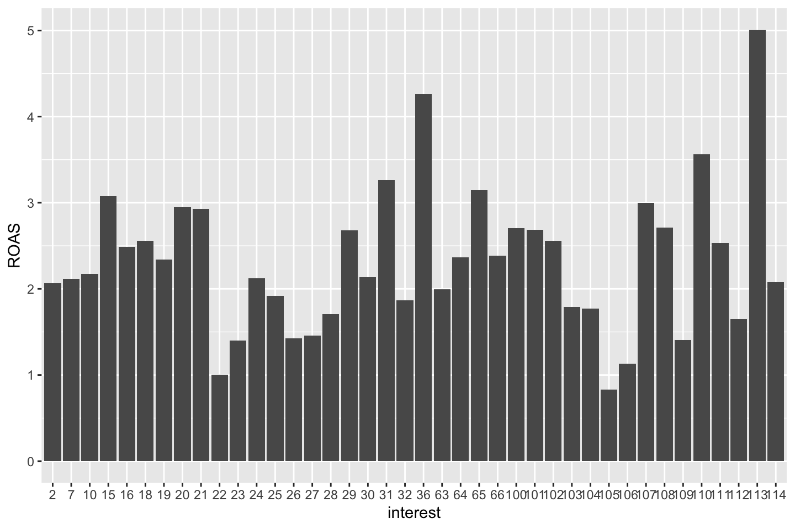
ggplot(dataTfo1, aes(Spent, ROAS)) + geom_point() + labs(x = "Amount spent on campaign", y = "ROAS")
options(repr.plot.width=6, repr.plot.height=3)
ggplot(dataTfo1, aes(Spent, totConv)) + geom_point() + labs(x = "Amount spent on campaign", y = "Total Conversions")# Measure of associations
par(mfrow = c(1, 1))
library(corrplot)
cormatrix = corrplot(cor(dataTfo1 [, -c(1:6)]))We seee that some variables appear to have a strong correlation with other variables, e.g. CTR and CPM.
We want to see how they interact with ROAS as well, to get an idea of wether they are positive and negative relationship.
NOTICE, this is based on a linear relationship between the variables. Since we are now in non linear models, we cannot use it the same way as when working in the linear scenarios. But we must be aware of variables that appear to have a really high correlation with one and other, hence we may exclude these.
The following is the same, but presented just with actual correlations.
cor(dataTfo1[,-c(1:6)],dataTfo1$ROAS)## [,1]
## impr -0.12495737
## Clicks -0.19118476
## Spent -0.18289935
## conv 0.09806281
## appConv 0.27926699
## CTR -0.11644181
## CPC -0.08201179
## totConv 0.15227797
## conVal 0.09806281
## appConVal 0.27926699
## totConVal 0.26170129
## costPerCon -0.37974060
## ROAS 1.00000000
## CPM -0.17622449
Other exploration techniques can be implemented. Data pre-processing remains an active area of research because of the huge amount of inconsistent or “dirty” data.
2.5.4.3 4.3 Task 3 - Building different models
Build several predictive models and evaluate their performance. First, consider reflecting about these specific questions:
Q1) Which of the so far introduced models can be applied to explain and predict the return on advertising spent (ROAS)? Later on, construct several models that answer to this question, using a training dataset.
Q2) Which sample should one use to evaluate the model? Furthermore, which model assessment and selection criteria applies in this case? Later on, evaluate the model based on applicable assessment and selection criteria.
Q3) Reflect about how one can improve the model prediction power.
# Splitting the data
library(ISLR)
smp_size <- floor(0.75 * nrow(dataTfo1))
set.seed(123)
train_ind <- sample(seq_len(nrow(dataTfo1)), size = smp_size)
trainTfo1 <- dataTfo1[train_ind, ]
testTfo1 <- dataTfo1[-train_ind, ]
2.5.4.3.1 A Generalized Additive Model (GAM) to predict ROAS
The questions that arise are:
- What subset of all the predictors can best explain and predict ROAS?
- What is the form of the relationships between them and ROAS?
Feature selection approaches include:
Generally looking at the variables “one by one,” to understand what features are important and to figure out how they contribute towards solving the problem.
Looking at the correlation matrix: If we are working with a model which assumes a linear relationship between the dependent and the independent variables, corr matrix can help us come up with an initial list of variable importance. However, corr matrix also works as a “rough informative tool” for nonlinear modelling.
Running automatic feature selection algorithms. Functions in R include, among others:
- c1. regsubsets() function in “leaps” library (presented in ISL, p. 244); used to select the best size model that contains a given number of predictors, where best is quantified using Residual Sum of Squares (RSS). Although regsubsets() is based on testing linear models, it works as a “rough” list for nonlinear models.
- c2. step.Gam() function in “gam” library for stepwise selection of variables in GAM models. This is useful when the number of predictors is not very high.
- c3. advanced feature selection methods based on other data-mining techniques, including but not only: random forests, Bayesian Networks, Neural Networks, or other. Notice, that we can use very complex methods of feature selection, and then construct a model that is more transparant, for instance GAMs
2.5.4.3.1.1 c1) Feature selection using regsubsets()
One may exclude ad_id and variables used to calculate our dependent variable ROAS, as they have a deterministic relation with it. The variable “interests” can be preprocessed to reduce the categories to the most representative ones, but for simplicity we keep it as it is. See later it creates some problems.
str(trainTfo1)## 'data.frame': 596 obs. of 20 variables:
## $ ad_id : int 1121532 1121642 781508 1121798 950068 776861 1121284 1121110 1121132 710480 ...
## $ xyzCampId : Factor w/ 3 levels "916","936","1178": 3 3 2 3 2 2 3 3 3 1 ...
## $ fbCampId : int 144612 144630 116397 144656 123438 115574 144571 144534 144537 104205 ...
## $ age : Factor w/ 4 levels "30-34","35-39",..: 3 4 1 1 1 4 1 1 1 1 ...
## $ gender : Factor w/ 2 levels "F","M": 2 2 1 1 2 2 2 2 2 1 ...
## $ interest : Factor w/ 40 levels "2","7","10","15",..: 18 11 22 12 3 2 25 6 9 5 ...
## $ impr : num 123126 99698 5040 107548 4012 ...
## $ Clicks : num 25 21 1 19 1 6 23 123 12 14 ...
## $ Spent : num 39.73 33.35 1.44 29.31 1.57 ...
## $ conv : num 2 1 1 1 1 1 1 6 4 1 ...
## $ appConv : num 1 0 0 0 0 0 0 2 2 1 ...
## $ CTR : num 0.0203 0.0211 0.0198 0.0177 0.0249 0.0364 0.0131 0.014 0.0104 0.0243 ...
## $ CPC : num 1.59 1.59 1.44 1.54 1.57 1.54 1.77 1.71 1.98 1.29 ...
## $ totConv : num 3 1 1 1 1 1 1 8 6 2 ...
## $ conVal : num 10 5 5 5 5 5 5 30 20 5 ...
## $ appConVal : num 100 0 0 0 0 0 0 200 200 100 ...
## $ totConVal : num 110 5 5 5 5 5 5 230 220 105 ...
## $ costPerCon: num 13.24 33.35 1.44 29.31 1.57 ...
## $ ROAS : num 2.77 0.15 3.47 0.17 3.18 0.54 0.12 1.09 9.27 5.81 ...
## $ CPM : num 0.32 0.33 0.29 0.27 0.39 0.56 0.23 0.24 0.21 0.31 ...
## - attr(*, "na.action")= 'omit' Named int [1:207] 3 6 11 12 13 14 16 18 21 25 ...
## ..- attr(*, "names")= chr [1:207] "3" "6" "11" "12" ...Now we can make the selection with forward selection.
library(leaps)
reg.fit = regsubsets(trainTfo1$ROAS ~ ., data = trainTfo1[,-c(1,3, 14:17)], method = "forward", nvmax=14)
reg.summary = summary(reg.fit)
reg.summary## Subset selection object
## Call: regsubsets.formula(trainTfo1$ROAS ~ ., data = trainTfo1[, -c(1,
## 3, 14:17)], method = "forward", nvmax = 14)
## 54 Variables (and intercept)
## Forced in Forced out
## xyzCampId936 FALSE FALSE
## xyzCampId1178 FALSE FALSE
## age35-39 FALSE FALSE
## age40-44 FALSE FALSE
## age45-49 FALSE FALSE
## genderM FALSE FALSE
## interest7 FALSE FALSE
## interest10 FALSE FALSE
## interest15 FALSE FALSE
## interest16 FALSE FALSE
## interest18 FALSE FALSE
## interest19 FALSE FALSE
## interest20 FALSE FALSE
## interest21 FALSE FALSE
## interest22 FALSE FALSE
## interest23 FALSE FALSE
## interest24 FALSE FALSE
## interest25 FALSE FALSE
## interest26 FALSE FALSE
## interest27 FALSE FALSE
## interest28 FALSE FALSE
## interest29 FALSE FALSE
## interest30 FALSE FALSE
## interest31 FALSE FALSE
## interest32 FALSE FALSE
## interest36 FALSE FALSE
## interest63 FALSE FALSE
## interest64 FALSE FALSE
## interest65 FALSE FALSE
## interest66 FALSE FALSE
## interest100 FALSE FALSE
## interest101 FALSE FALSE
## interest102 FALSE FALSE
## interest103 FALSE FALSE
## interest104 FALSE FALSE
## interest105 FALSE FALSE
## interest106 FALSE FALSE
## interest107 FALSE FALSE
## interest108 FALSE FALSE
## interest109 FALSE FALSE
## interest110 FALSE FALSE
## interest111 FALSE FALSE
## interest112 FALSE FALSE
## interest113 FALSE FALSE
## interest114 FALSE FALSE
## impr FALSE FALSE
## Clicks FALSE FALSE
## Spent FALSE FALSE
## conv FALSE FALSE
## appConv FALSE FALSE
## CTR FALSE FALSE
## CPC FALSE FALSE
## costPerCon FALSE FALSE
## CPM FALSE FALSE
## 1 subsets of each size up to 14
## Selection Algorithm: forward
## xyzCampId936 xyzCampId1178 age35-39 age40-44 age45-49 genderM
## 1 ( 1 ) " " " " " " " " " " " "
## 2 ( 1 ) " " " " " " " " " " " "
## 3 ( 1 ) " " " " " " " " " " " "
## 4 ( 1 ) " " " " " " " " " " " "
## 5 ( 1 ) " " " " " " " " " " " "
## 6 ( 1 ) " " " " " " " " " " " "
## 7 ( 1 ) " " " " " " " " " " " "
## 8 ( 1 ) " " " " " " " " " " " "
## 9 ( 1 ) " " " " " " " " " " " "
## 10 ( 1 ) " " " " " " " " "*" " "
## 11 ( 1 ) " " " " " " " " "*" " "
## 12 ( 1 ) " " " " " " " " "*" " "
## 13 ( 1 ) " " " " " " " " "*" " "
## 14 ( 1 ) " " " " " " " " "*" " "
## interest7 interest10 interest15 interest16 interest18 interest19
## 1 ( 1 ) " " " " " " " " " " " "
## 2 ( 1 ) " " " " " " " " " " " "
## 3 ( 1 ) " " " " " " " " " " " "
## 4 ( 1 ) " " " " " " " " " " " "
## 5 ( 1 ) " " " " " " " " " " " "
## 6 ( 1 ) " " " " " " " " " " " "
## 7 ( 1 ) " " " " " " " " " " " "
## 8 ( 1 ) " " " " " " " " " " " "
## 9 ( 1 ) " " " " "*" " " " " " "
## 10 ( 1 ) " " " " "*" " " " " " "
## 11 ( 1 ) " " " " "*" " " "*" " "
## 12 ( 1 ) " " " " "*" " " "*" " "
## 13 ( 1 ) " " " " "*" " " "*" " "
## 14 ( 1 ) " " " " "*" " " "*" " "
## interest20 interest21 interest22 interest23 interest24 interest25
## 1 ( 1 ) " " " " " " " " " " " "
## 2 ( 1 ) " " " " " " " " " " " "
## 3 ( 1 ) " " " " " " " " " " " "
## 4 ( 1 ) " " " " " " " " " " " "
## 5 ( 1 ) " " " " " " " " " " " "
## 6 ( 1 ) " " " " " " " " " " " "
## 7 ( 1 ) " " " " "*" " " " " " "
## 8 ( 1 ) " " " " "*" " " " " " "
## 9 ( 1 ) " " " " "*" " " " " " "
## 10 ( 1 ) " " " " "*" " " " " " "
## 11 ( 1 ) " " " " "*" " " " " " "
## 12 ( 1 ) " " " " "*" " " " " " "
## 13 ( 1 ) " " " " "*" " " " " " "
## 14 ( 1 ) " " " " "*" " " " " " "
## interest26 interest27 interest28 interest29 interest30 interest31
## 1 ( 1 ) " " " " " " " " " " " "
## 2 ( 1 ) " " " " " " " " " " " "
## 3 ( 1 ) " " " " " " " " " " " "
## 4 ( 1 ) " " " " " " " " " " " "
## 5 ( 1 ) " " " " " " " " " " " "
## 6 ( 1 ) " " " " " " " " " " " "
## 7 ( 1 ) " " " " " " " " " " " "
## 8 ( 1 ) " " " " " " " " " " " "
## 9 ( 1 ) " " " " " " " " " " " "
## 10 ( 1 ) " " " " " " " " " " " "
## 11 ( 1 ) " " " " " " " " " " " "
## 12 ( 1 ) " " " " " " " " " " " "
## 13 ( 1 ) " " " " " " " " " " " "
## 14 ( 1 ) " " " " " " " " " " " "
## interest32 interest36 interest63 interest64 interest65 interest66
## 1 ( 1 ) " " " " " " " " " " " "
## 2 ( 1 ) " " " " " " " " " " " "
## 3 ( 1 ) " " " " " " " " " " " "
## 4 ( 1 ) " " " " " " " " " " " "
## 5 ( 1 ) " " " " " " " " " " " "
## 6 ( 1 ) " " " " " " " " " " " "
## 7 ( 1 ) " " " " " " " " " " " "
## 8 ( 1 ) " " "*" " " " " " " " "
## 9 ( 1 ) " " "*" " " " " " " " "
## 10 ( 1 ) " " "*" " " " " " " " "
## 11 ( 1 ) " " "*" " " " " " " " "
## 12 ( 1 ) " " "*" " " " " " " " "
## 13 ( 1 ) " " "*" " " " " " " " "
## 14 ( 1 ) " " "*" " " " " " " " "
## interest100 interest101 interest102 interest103 interest104
## 1 ( 1 ) " " " " " " " " " "
## 2 ( 1 ) " " " " " " " " " "
## 3 ( 1 ) " " " " " " " " " "
## 4 ( 1 ) " " " " " " " " " "
## 5 ( 1 ) " " " " " " " " " "
## 6 ( 1 ) " " " " " " " " " "
## 7 ( 1 ) " " " " " " " " " "
## 8 ( 1 ) " " " " " " " " " "
## 9 ( 1 ) " " " " " " " " " "
## 10 ( 1 ) " " " " " " " " " "
## 11 ( 1 ) " " " " " " " " " "
## 12 ( 1 ) " " " " " " " " " "
## 13 ( 1 ) " " " " " " " " " "
## 14 ( 1 ) " " " " " " " " " "
## interest105 interest106 interest107 interest108 interest109
## 1 ( 1 ) " " " " " " " " " "
## 2 ( 1 ) " " " " " " " " " "
## 3 ( 1 ) " " " " " " " " " "
## 4 ( 1 ) " " " " " " " " " "
## 5 ( 1 ) " " " " " " " " " "
## 6 ( 1 ) " " " " " " " " " "
## 7 ( 1 ) " " " " " " " " " "
## 8 ( 1 ) " " " " " " " " " "
## 9 ( 1 ) " " " " " " " " " "
## 10 ( 1 ) " " " " " " " " " "
## 11 ( 1 ) " " " " " " " " " "
## 12 ( 1 ) " " " " " " " " " "
## 13 ( 1 ) " " " " " " " " " "
## 14 ( 1 ) " " " " " " " " " "
## interest110 interest111 interest112 interest113 interest114 impr
## 1 ( 1 ) " " " " " " " " " " " "
## 2 ( 1 ) " " " " " " " " " " " "
## 3 ( 1 ) " " " " " " " " " " "*"
## 4 ( 1 ) " " " " " " " " " " "*"
## 5 ( 1 ) " " " " " " " " " " "*"
## 6 ( 1 ) " " " " " " " " " " "*"
## 7 ( 1 ) " " " " " " " " " " "*"
## 8 ( 1 ) " " " " " " " " " " "*"
## 9 ( 1 ) " " " " " " " " " " "*"
## 10 ( 1 ) " " " " " " " " " " "*"
## 11 ( 1 ) " " " " " " " " " " "*"
## 12 ( 1 ) "*" " " " " " " " " "*"
## 13 ( 1 ) "*" " " " " " " " " "*"
## 14 ( 1 ) "*" " " " " "*" " " "*"
## Clicks Spent conv appConv CTR CPC costPerCon CPM
## 1 ( 1 ) " " " " " " " " " " " " "*" " "
## 2 ( 1 ) " " " " " " "*" " " " " "*" " "
## 3 ( 1 ) " " " " " " "*" " " " " "*" " "
## 4 ( 1 ) " " " " "*" "*" " " " " "*" " "
## 5 ( 1 ) " " " " "*" "*" " " " " "*" "*"
## 6 ( 1 ) " " " " "*" "*" "*" " " "*" "*"
## 7 ( 1 ) " " " " "*" "*" "*" " " "*" "*"
## 8 ( 1 ) " " " " "*" "*" "*" " " "*" "*"
## 9 ( 1 ) " " " " "*" "*" "*" " " "*" "*"
## 10 ( 1 ) " " " " "*" "*" "*" " " "*" "*"
## 11 ( 1 ) " " " " "*" "*" "*" " " "*" "*"
## 12 ( 1 ) " " " " "*" "*" "*" " " "*" "*"
## 13 ( 1 ) " " "*" "*" "*" "*" " " "*" "*"
## 14 ( 1 ) " " "*" "*" "*" "*" " " "*" "*"Recall, an asteriks indicates that a given variable is included in the corresponding model. The default is “1 subsets of each size up to 8,” but using “nvmax” option we can control as many variables as are desired.
Use a prediction error criteria (Adj^R2 BIC, Cp) to select the “best overall” model: names(reg.summary)
In this example \(R^2\) is applied.
reg.summary$rsq## [1] 0.1596916 0.2163240 0.3276550 0.3437687 0.3584745 0.3676564 0.3766836
## [8] 0.3843347 0.3880903 0.3913334 0.3946034 0.3973916 0.4003809 0.4033252Rsquare increases monotonically as more variables are included. This is expected; the model containing all predictors will always have the smallest RSS and the largest \(R^2\).
plot(reg.summary$adjr2, xlab = "Number of Variables", ylab = "Adjusted R2", type = "p", ylim = c(0.1, 1), main = " Adj R2 for each model")
grid(col = "darkgrey")
max.adjr2 = max(reg.summary$adjr2)
std.adjr2 = sd(reg.summary$adjr2)
abline(h = max.adjr2 + 0.2 * std.adjr2, col = "red", lty = 2)
abline(h = max.adjr2 - 0.2 * std.adjr2, col = "red", lty = 2)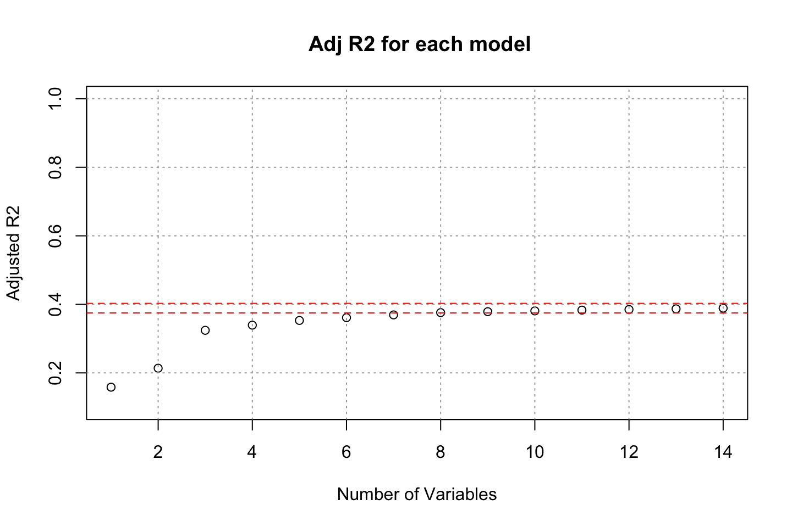
The plot shows the size 10-11 is the minimum size for the subset for which the scores are within 0.2 standard deviations of optimum.
That is because the \(R^2\) does not significantly change. Therefore, we can just limit ourselves with a more simple model.
We can see how the selection changes if we use the full model
A common approach when dataset is small is to find best 10 variables using entire dataset.
Notice, that some researches will argue that this implies data leakage.
reg.fit = regsubsets(dataTfo1$ROAS ~ ., data = dataTfo1[,-c(1,3, 14:17)], method = "forward", nvmax=14)
summary(reg.fit)## Subset selection object
## Call: regsubsets.formula(dataTfo1$ROAS ~ ., data = dataTfo1[, -c(1,
## 3, 14:17)], method = "forward", nvmax = 14)
## 54 Variables (and intercept)
## Forced in Forced out
## xyzCampId936 FALSE FALSE
## xyzCampId1178 FALSE FALSE
## age35-39 FALSE FALSE
## age40-44 FALSE FALSE
## age45-49 FALSE FALSE
## genderM FALSE FALSE
## interest7 FALSE FALSE
## interest10 FALSE FALSE
## interest15 FALSE FALSE
## interest16 FALSE FALSE
## interest18 FALSE FALSE
## interest19 FALSE FALSE
## interest20 FALSE FALSE
## interest21 FALSE FALSE
## interest22 FALSE FALSE
## interest23 FALSE FALSE
## interest24 FALSE FALSE
## interest25 FALSE FALSE
## interest26 FALSE FALSE
## interest27 FALSE FALSE
## interest28 FALSE FALSE
## interest29 FALSE FALSE
## interest30 FALSE FALSE
## interest31 FALSE FALSE
## interest32 FALSE FALSE
## interest36 FALSE FALSE
## interest63 FALSE FALSE
## interest64 FALSE FALSE
## interest65 FALSE FALSE
## interest66 FALSE FALSE
## interest100 FALSE FALSE
## interest101 FALSE FALSE
## interest102 FALSE FALSE
## interest103 FALSE FALSE
## interest104 FALSE FALSE
## interest105 FALSE FALSE
## interest106 FALSE FALSE
## interest107 FALSE FALSE
## interest108 FALSE FALSE
## interest109 FALSE FALSE
## interest110 FALSE FALSE
## interest111 FALSE FALSE
## interest112 FALSE FALSE
## interest113 FALSE FALSE
## interest114 FALSE FALSE
## impr FALSE FALSE
## Clicks FALSE FALSE
## Spent FALSE FALSE
## conv FALSE FALSE
## appConv FALSE FALSE
## CTR FALSE FALSE
## CPC FALSE FALSE
## costPerCon FALSE FALSE
## CPM FALSE FALSE
## 1 subsets of each size up to 14
## Selection Algorithm: forward
## xyzCampId936 xyzCampId1178 age35-39 age40-44 age45-49 genderM
## 1 ( 1 ) " " " " " " " " " " " "
## 2 ( 1 ) " " " " " " " " " " " "
## 3 ( 1 ) " " " " " " " " " " " "
## 4 ( 1 ) " " " " " " " " " " " "
## 5 ( 1 ) " " " " " " " " " " " "
## 6 ( 1 ) " " " " " " " " " " " "
## 7 ( 1 ) " " " " " " " " " " " "
## 8 ( 1 ) " " " " " " " " " " " "
## 9 ( 1 ) " " " " " " " " " " " "
## 10 ( 1 ) " " " " " " " " " " " "
## 11 ( 1 ) " " " " " " " " "*" " "
## 12 ( 1 ) " " " " " " " " "*" " "
## 13 ( 1 ) " " " " " " " " "*" " "
## 14 ( 1 ) " " "*" " " " " "*" " "
## interest7 interest10 interest15 interest16 interest18 interest19
## 1 ( 1 ) " " " " " " " " " " " "
## 2 ( 1 ) " " " " " " " " " " " "
## 3 ( 1 ) " " " " " " " " " " " "
## 4 ( 1 ) " " " " " " " " " " " "
## 5 ( 1 ) " " " " " " " " " " " "
## 6 ( 1 ) " " " " " " " " " " " "
## 7 ( 1 ) " " " " " " " " " " " "
## 8 ( 1 ) " " " " " " " " " " " "
## 9 ( 1 ) " " " " " " " " " " " "
## 10 ( 1 ) " " " " "*" " " " " " "
## 11 ( 1 ) " " " " "*" " " " " " "
## 12 ( 1 ) " " " " "*" " " " " " "
## 13 ( 1 ) " " " " "*" " " " " " "
## 14 ( 1 ) " " " " "*" " " " " " "
## interest20 interest21 interest22 interest23 interest24 interest25
## 1 ( 1 ) " " " " " " " " " " " "
## 2 ( 1 ) " " " " " " " " " " " "
## 3 ( 1 ) " " " " " " " " " " " "
## 4 ( 1 ) " " " " " " " " " " " "
## 5 ( 1 ) " " " " " " " " " " " "
## 6 ( 1 ) " " " " " " " " " " " "
## 7 ( 1 ) " " " " "*" " " " " " "
## 8 ( 1 ) " " " " "*" " " " " " "
## 9 ( 1 ) " " " " "*" " " " " " "
## 10 ( 1 ) " " " " "*" " " " " " "
## 11 ( 1 ) " " " " "*" " " " " " "
## 12 ( 1 ) " " " " "*" " " " " " "
## 13 ( 1 ) " " " " "*" " " " " " "
## 14 ( 1 ) " " " " "*" " " " " " "
## interest26 interest27 interest28 interest29 interest30 interest31
## 1 ( 1 ) " " " " " " " " " " " "
## 2 ( 1 ) " " " " " " " " " " " "
## 3 ( 1 ) " " " " " " " " " " " "
## 4 ( 1 ) " " " " " " " " " " " "
## 5 ( 1 ) " " " " " " " " " " " "
## 6 ( 1 ) " " " " " " " " " " " "
## 7 ( 1 ) " " " " " " " " " " " "
## 8 ( 1 ) " " " " " " " " " " " "
## 9 ( 1 ) " " " " " " " " " " " "
## 10 ( 1 ) " " " " " " " " " " " "
## 11 ( 1 ) " " " " " " " " " " " "
## 12 ( 1 ) " " " " " " " " " " " "
## 13 ( 1 ) "*" " " " " " " " " " "
## 14 ( 1 ) "*" " " " " " " " " " "
## interest32 interest36 interest63 interest64 interest65 interest66
## 1 ( 1 ) " " " " " " " " " " " "
## 2 ( 1 ) " " " " " " " " " " " "
## 3 ( 1 ) " " " " " " " " " " " "
## 4 ( 1 ) " " " " " " " " " " " "
## 5 ( 1 ) " " " " " " " " " " " "
## 6 ( 1 ) " " " " " " " " " " " "
## 7 ( 1 ) " " " " " " " " " " " "
## 8 ( 1 ) " " "*" " " " " " " " "
## 9 ( 1 ) " " "*" " " " " " " " "
## 10 ( 1 ) " " "*" " " " " " " " "
## 11 ( 1 ) " " "*" " " " " " " " "
## 12 ( 1 ) " " "*" " " " " " " " "
## 13 ( 1 ) " " "*" " " " " " " " "
## 14 ( 1 ) " " "*" " " " " " " " "
## interest100 interest101 interest102 interest103 interest104
## 1 ( 1 ) " " " " " " " " " "
## 2 ( 1 ) " " " " " " " " " "
## 3 ( 1 ) " " " " " " " " " "
## 4 ( 1 ) " " " " " " " " " "
## 5 ( 1 ) " " " " " " " " " "
## 6 ( 1 ) " " " " " " " " " "
## 7 ( 1 ) " " " " " " " " " "
## 8 ( 1 ) " " " " " " " " " "
## 9 ( 1 ) " " " " " " " " " "
## 10 ( 1 ) " " " " " " " " " "
## 11 ( 1 ) " " " " " " " " " "
## 12 ( 1 ) " " " " " " " " " "
## 13 ( 1 ) " " " " " " " " " "
## 14 ( 1 ) " " " " " " " " " "
## interest105 interest106 interest107 interest108 interest109
## 1 ( 1 ) " " " " " " " " " "
## 2 ( 1 ) " " " " " " " " " "
## 3 ( 1 ) " " " " " " " " " "
## 4 ( 1 ) " " " " " " " " " "
## 5 ( 1 ) " " " " " " " " " "
## 6 ( 1 ) " " " " " " " " " "
## 7 ( 1 ) " " " " " " " " " "
## 8 ( 1 ) " " " " " " " " " "
## 9 ( 1 ) " " " " " " " " " "
## 10 ( 1 ) " " " " " " " " " "
## 11 ( 1 ) " " " " " " " " " "
## 12 ( 1 ) " " " " " " " " " "
## 13 ( 1 ) " " " " " " " " " "
## 14 ( 1 ) " " " " " " " " " "
## interest110 interest111 interest112 interest113 interest114 impr
## 1 ( 1 ) " " " " " " " " " " " "
## 2 ( 1 ) " " " " " " " " " " " "
## 3 ( 1 ) " " " " " " " " " " "*"
## 4 ( 1 ) " " " " " " " " " " "*"
## 5 ( 1 ) " " " " " " " " " " "*"
## 6 ( 1 ) " " " " " " " " " " "*"
## 7 ( 1 ) " " " " " " " " " " "*"
## 8 ( 1 ) " " " " " " " " " " "*"
## 9 ( 1 ) " " " " " " "*" " " "*"
## 10 ( 1 ) " " " " " " "*" " " "*"
## 11 ( 1 ) " " " " " " "*" " " "*"
## 12 ( 1 ) " " " " " " "*" " " "*"
## 13 ( 1 ) " " " " " " "*" " " "*"
## 14 ( 1 ) " " " " " " "*" " " "*"
## Clicks Spent conv appConv CTR CPC costPerCon CPM
## 1 ( 1 ) " " " " " " " " " " " " "*" " "
## 2 ( 1 ) " " " " " " "*" " " " " "*" " "
## 3 ( 1 ) " " " " " " "*" " " " " "*" " "
## 4 ( 1 ) " " " " " " "*" " " " " "*" "*"
## 5 ( 1 ) " " " " " " "*" "*" " " "*" "*"
## 6 ( 1 ) " " " " "*" "*" "*" " " "*" "*"
## 7 ( 1 ) " " " " "*" "*" "*" " " "*" "*"
## 8 ( 1 ) " " " " "*" "*" "*" " " "*" "*"
## 9 ( 1 ) " " " " "*" "*" "*" " " "*" "*"
## 10 ( 1 ) " " " " "*" "*" "*" " " "*" "*"
## 11 ( 1 ) " " " " "*" "*" "*" " " "*" "*"
## 12 ( 1 ) " " "*" "*" "*" "*" " " "*" "*"
## 13 ( 1 ) " " "*" "*" "*" "*" " " "*" "*"
## 14 ( 1 ) " " "*" "*" "*" "*" " " "*" "*"We want to select 10 variables.
coefi = coef(reg.fit
, id=10) #Selection 10 variables
names(coefi) # most important variables based on regsubsets() feature selection## [1] "(Intercept)" "interest15" "interest22" "interest36" "interest113"
## [6] "impr" "conv" "appConv" "CTR" "costPerCon"
## [11] "CPM"2.5.4.3.1.1.1 1) I run a linear regression using the selected features, to have a benchmark
In general, one should start with a simple model to see graudally advance, instead of jumping directly to complex models.
model1<-lm(ROAS ~ interest + impr + conv + appConv + CTR + costPerCon + CPM, data = trainTfo1)
summary(model1) # summary.aov(model1) #Alternatice##
## Call:
## lm(formula = ROAS ~ interest + impr + conv + appConv + CTR +
## costPerCon + CPM, data = trainTfo1)
##
## Residuals:
## Min 1Q Median 3Q Max
## -6.1662 -1.2349 -0.4432 0.7776 8.6722
##
## Coefficients:
## Estimate Std. Error t value Pr(>|t|)
## (Intercept) 3.3763879089 0.7060735443 4.782 0.0000022324 ***
## interest7 -0.0583638167 0.8693104092 -0.067 0.946496
## interest10 0.3734569279 0.7214261646 0.518 0.604900
## interest15 1.2644513305 0.8019953469 1.577 0.115455
## interest16 0.3374435422 0.7113702609 0.474 0.635434
## interest18 1.1057788779 0.7863738142 1.406 0.160237
## interest19 0.9323670080 0.8226657597 1.133 0.257562
## interest20 0.5455427694 0.7734543762 0.705 0.480902
## interest21 0.4776314482 0.8140258838 0.587 0.557611
## interest22 -0.9810753002 0.8151526846 -1.204 0.229282
## interest23 -0.3833780502 0.8244934737 -0.465 0.642125
## interest24 0.4104935167 0.8587144041 0.478 0.632817
## interest25 0.0810874657 0.8224831441 0.099 0.921501
## interest26 -0.3607817261 0.8259069717 -0.437 0.662405
## interest27 0.5381079815 0.7408381010 0.726 0.467933
## interest28 0.0740605292 0.7759433375 0.095 0.923996
## interest29 0.1688327587 0.7394183904 0.228 0.819473
## interest30 0.2578505667 0.9459553954 0.273 0.785277
## interest31 1.1640980299 1.0164662116 1.145 0.252608
## interest32 0.0403419742 0.8559559577 0.047 0.962426
## interest36 2.1016082503 0.9016484081 2.331 0.020122 *
## interest63 0.5435879396 0.7789099391 0.698 0.485545
## interest64 0.6639079122 0.7722974638 0.860 0.390355
## interest65 0.2431197639 0.9014227709 0.270 0.787487
## interest66 0.8330235765 1.0160487256 0.820 0.412648
## interest100 0.8516465674 1.2281375647 0.693 0.488323
## interest101 -0.0641588098 1.3666934608 -0.047 0.962574
## interest102 0.9276318226 1.3630425863 0.681 0.496437
## interest103 0.8208051392 1.2313704057 0.667 0.505321
## interest104 0.7144614519 1.4011137921 0.510 0.610309
## interest105 -0.0104297991 1.1441788217 -0.009 0.992730
## interest106 -0.4410980827 1.1341681728 -0.389 0.697488
## interest107 0.8812751901 1.0344524204 0.852 0.394627
## interest108 0.8096481829 1.1383717983 0.711 0.477241
## interest109 0.2773726276 1.1440075722 0.242 0.808516
## interest110 1.6981730219 1.0731149157 1.582 0.114117
## interest111 0.8419734890 1.2354163562 0.682 0.495823
## interest112 -0.8046055498 1.2397091379 -0.649 0.516591
## interest113 1.5852227480 1.1413885504 1.389 0.165439
## interest114 -0.9363468962 1.2231230818 -0.766 0.444280
## impr -0.0000030933 0.0000005615 -5.509 0.0000000556 ***
## conv -0.1835589139 0.0474635767 -3.867 0.000123 ***
## appConv 1.1139191669 0.0950624431 11.718 < 2e-16 ***
## CTR 109.1401641334 31.7080460628 3.442 0.000621 ***
## costPerCon -0.0195060636 0.0047454249 -4.110 0.0000455039 ***
## CPM -10.0887785837 2.3882226628 -4.224 0.0000280419 ***
## ---
## Signif. codes: 0 '***' 0.001 '**' 0.01 '*' 0.05 '.' 0.1 ' ' 1
##
## Residual standard error: 2.058 on 550 degrees of freedom
## Multiple R-squared: 0.413, Adjusted R-squared: 0.3649
## F-statistic: 8.598 on 45 and 550 DF, p-value: < 2.2e-16AIC(model1)## [1] 2597.989The model diagnostics
par(mfrow = c(2, 2))
plot(model1)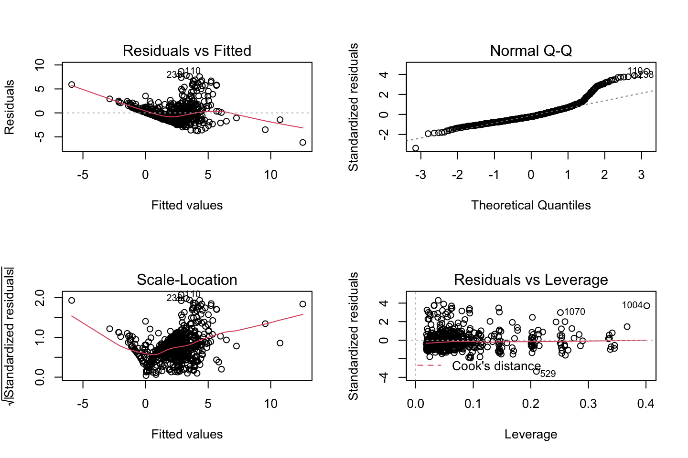
Notice, that the top right is the theoretical distribution (or quantiles) of a normal distribution. We see that the is a wave in the residuals, implying that there may be some non linearity.
Further inspecting the residuals
par(mfrow = c(1,1))
hist(model1$residuals)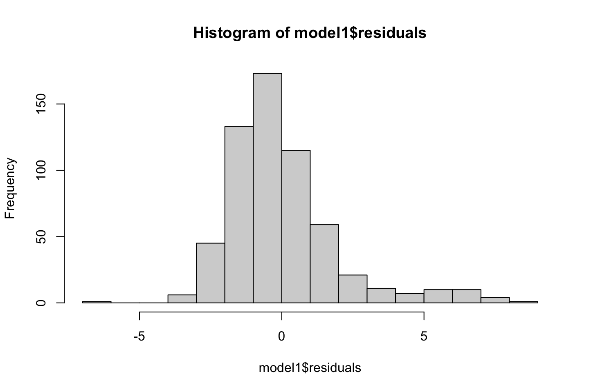
The residuals look quite well
2.5.4.3.1.1.2 2) Linked to the topic of this lecture, run a non-liner model, such as the Generalized Additive Model (GAM) with smoothing splines.**
We have two available approaches at hand:
- Option 1: using “gam” function from “gam” package
- Option 2: using “gam” function from “mgcv” package
- Recall mgcv package and gam package may interact. Uncall one of them if you get an error.
library('mgcv')
set.seed(123)
gam.mgcv <- mgcv::gam(ROAS ~ interest + s(impr) + s(conv) + s(appConv) + s(CTR) + s(costPerCon) + s(CPM), data = trainTfo1) # "gam" function from "mgcv" package estimates the smoothness automatically based on cross-validation (LOOCV, the default) or REML (Restricted Maximum Likelihood)
summary(gam.mgcv)##
## Family: gaussian
## Link function: identity
##
## Formula:
## ROAS ~ interest + s(impr) + s(conv) + s(appConv) + s(CTR) + s(costPerCon) +
## s(CPM)
##
## Parametric coefficients:
## Estimate Std. Error t value Pr(>|t|)
## (Intercept) 2.17980 0.43775 4.980 0.000000869 ***
## interest7 0.24123 0.57911 0.417 0.6772
## interest10 0.18304 0.48420 0.378 0.7056
## interest15 0.38606 0.53880 0.717 0.4740
## interest16 0.11986 0.47583 0.252 0.8012
## interest18 -0.09142 0.52458 -0.174 0.8617
## interest19 0.82120 0.54766 1.499 0.1344
## interest20 0.13610 0.51544 0.264 0.7918
## interest21 0.02640 0.53909 0.049 0.9610
## interest22 0.09319 0.53946 0.173 0.8629
## interest23 -0.56172 0.54856 -1.024 0.3063
## interest24 -0.08992 0.57528 -0.156 0.8759
## interest25 -0.04603 0.55372 -0.083 0.9338
## interest26 -0.30219 0.55505 -0.544 0.5864
## interest27 0.51573 0.49750 1.037 0.3004
## interest28 0.12121 0.51861 0.234 0.8153
## interest29 -0.03154 0.49268 -0.064 0.9490
## interest30 -0.40478 0.62268 -0.650 0.5159
## interest31 0.83810 0.66915 1.252 0.2110
## interest32 0.26961 0.56769 0.475 0.6350
## interest36 1.12968 0.59284 1.906 0.0573 .
## interest63 -0.04652 0.51940 -0.090 0.9287
## interest64 0.41739 0.51161 0.816 0.4150
## interest65 0.03027 0.59451 0.051 0.9594
## interest66 0.52158 0.66676 0.782 0.4344
## interest100 -0.18099 0.82344 -0.220 0.8261
## interest101 0.13743 0.90918 0.151 0.8799
## interest102 -0.04860 0.90212 -0.054 0.9571
## interest103 0.47957 0.81182 0.591 0.5550
## interest104 -1.30671 0.94229 -1.387 0.1661
## interest105 1.19263 0.76381 1.561 0.1190
## interest106 0.24244 0.74505 0.325 0.7450
## interest107 0.32292 0.70132 0.460 0.6454
## interest108 -0.63161 0.75881 -0.832 0.4056
## interest109 -0.29230 0.76418 -0.383 0.7022
## interest110 0.53685 0.71649 0.749 0.4540
## interest111 0.68357 0.83983 0.814 0.4161
## interest112 0.36783 0.88298 0.417 0.6772
## interest113 0.49405 0.76593 0.645 0.5192
## interest114 -0.50182 0.80131 -0.626 0.5314
## ---
## Signif. codes: 0 '***' 0.001 '**' 0.01 '*' 0.05 '.' 0.1 ' ' 1
##
## Approximate significance of smooth terms:
## edf Ref.df F p-value
## s(impr) 6.429 7.371 15.745 < 2e-16 ***
## s(conv) 6.220 7.047 3.453 0.000984 ***
## s(appConv) 7.191 7.717 84.077 < 2e-16 ***
## s(CTR) 5.281 6.340 2.375 0.026540 *
## s(costPerCon) 7.980 8.690 28.832 < 2e-16 ***
## s(CPM) 3.160 4.015 4.666 0.001024 **
## ---
## Signif. codes: 0 '***' 0.001 '**' 0.01 '*' 0.05 '.' 0.1 ' ' 1
##
## R-sq.(adj) = 0.735 Deviance explained = 76.9%
## GCV = 2.027 Scale est. = 1.7676 n = 596We see from the approximate significance of the smooth terms, that the smoothed variables appear to be siginificant, hence the smoothing splines are justified. We can also see the edf (estimated degrees of freedom), for each of the variables.
The first parametric coefficients show how the varibles perform compared to the reference (baseline), we see that there are different p-values, where it looks as if interest 36 is the only significant, although we must remember that this is in reference to the baseline, hence it does not imply that the categories with p > 5% is insignificant. If we look further into the variable, we see that some of the categories have very few variables, hence we can bin the categories together. E.g.,
table(trainTfo1$interest)##
## 2 7 10 15 16 18 19 20 21 22 23 24 25 26 27 28 29 30 31 32
## 10 13 48 21 60 23 17 25 18 19 17 14 18 17 37 26 38 9 7 14
## 36 63 64 65 66 100 101 102 103 104 105 106 107 108 109 110 111 112 113 114
## 11 24 25 11 7 4 3 3 4 3 5 5 7 5 5 6 4 4 5 4E.g. interest 114 have only four obsevationbs, we can aggregate groups, e.g., by looking at the means of the groups.
aggregate(trainTfo1$ROAS,by = list(trainTfo1$interest),mean)| Group.1 | x |
|---|---|
| 2 | 2.3410000 |
| 7 | 2.2507692 |
| 10 | 2.2810417 |
| 15 | 3.1423810 |
| 16 | 2.3663333 |
| 18 | 2.8282609 |
| 19 | 2.8247059 |
| 20 | 2.9944000 |
| 21 | 2.6822222 |
| 22 | 0.5963158 |
| 23 | 1.4623529 |
| 24 | 2.2957143 |
| 25 | 1.8588889 |
| 26 | 1.3188235 |
| 27 | 1.5972973 |
| 28 | 1.6423077 |
| 29 | 2.4734211 |
| 30 | 2.4400000 |
| 31 | 3.5300000 |
| 32 | 2.0764286 |
| 36 | 4.4445455 |
| 63 | 2.2858333 |
| 64 | 2.6624000 |
| 65 | 2.4272727 |
| 66 | 2.8700000 |
| 100 | 3.8350000 |
| 101 | 1.9500000 |
| 102 | 3.3900000 |
| 103 | 1.7875000 |
| 104 | 2.3033333 |
| 105 | 0.9300000 |
| 106 | 1.1320000 |
| 107 | 3.1528571 |
| 108 | 3.2280000 |
| 109 | 1.1380000 |
| 110 | 4.3983333 |
| 111 | 3.6075000 |
| 112 | 1.9150000 |
| 113 | 3.7440000 |
| 114 | 1.0275000 |
We see that they are close to each other, where one could combine groups based on this.
For which variables, if any, is there evidence of a non-linear relationship with the response? in the output, the edf (estimated degrees of freedom) column allow us to interpret the degree of nonlinearity for each predictor.
# contrasts(trainTfo1$interest)
AIC(gam.mgcv) # decreases compared to linear model## [1] 2103.794Other checks
One should always check the residuals
par(mfrow = c(1,1))
plot(gam.mgcv$residuals)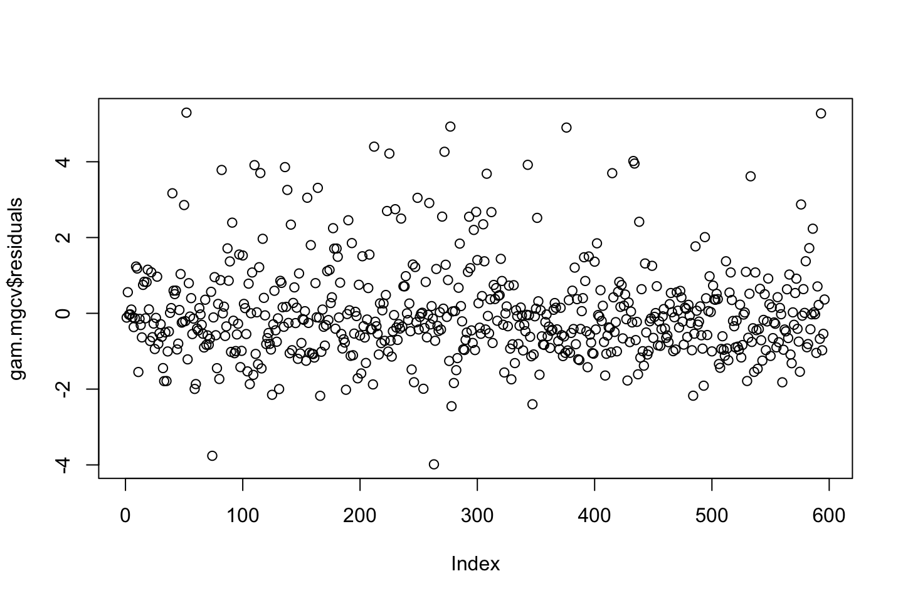
qqnorm(gam.mgcv$residuals)
qqline(gam.mgcv$residuals)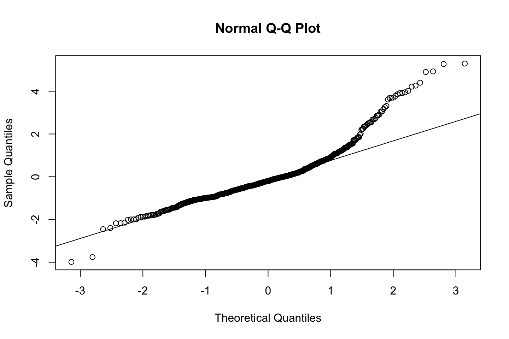
hist((gam.mgcv$residuals))
interpreting the partial effects of the smooth terms visually using plot(gam_model) (see p. 284 ISL).
par(mfrow = c(2, 2))
plot(gam.mgcv, se = T, col = "blue", scheme=1,unconditional = TRUE, residuals = TRUE) 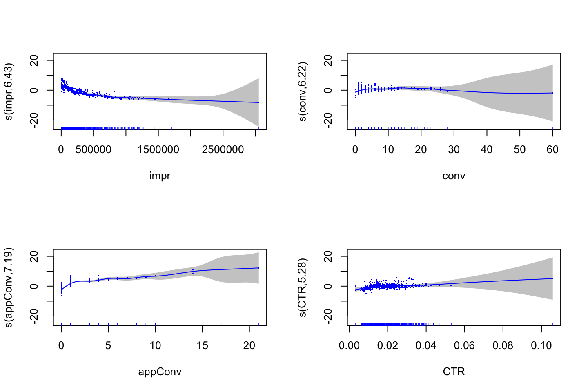
Holding all the other variables in the model fixed, return on advertising spent tends to decrease with increasing impr (the number of times the ad was shown). holding all the other variables in the model fixed, total people signing up to the webshop (conv) has no significant effect on ROAS. Holding all the other variables in the model fixed, total people purchasing the product (appConv) and click-through-rate (CTR) have a significant positive nonlinear effect on ROAS. However, the CI in some areas is also very large due to very few observations, thus more data is required to evaluate the results. Finally cost-per-click (CPM = Spent/Impr *1000) has a decreasing nonlinear effect on ROAS, but the effect is very uncertain given CI become very large when CPM >1. Overall, the relationships found are intuitive but the effec ts are not strong.
# Evaluating test MSE using using k-fold cross-validation
set.seed(1)
k=5
folds = sample(1:k, nrow(trainTfo1), replace = TRUE)
gam.err = matrix(NA, k)
gam.tss = matrix(NA, k)
cv.r2 = matrix(NA, k)
for (j in 1:k) {
gam.mgcv = mgcv::gam(ROAS ~ s(impr) + s(conv) + s(appConv) + s(CTR) + s(costPerCon) + s(CPM), data = trainTfo1[folds!=j,]) # folds !=j returns the in-sample data
pred = predict(gam.mgcv, trainTfo1[folds==j,])
gam.err[j] = mean((trainTfo1$ROAS[folds==j] - pred)^2)
gam.tss[j] = mean((trainTfo1$ROAS[folds==j] - mean(trainTfo1$ROAS[folds==j]))^2)
cv.r2[j] = 1 - gam.err[j]/gam.tss[j]
cv.r2[j]
}
cv.r2## [,1]
## [1,] 0.6894129
## [2,] 0.7195426
## [3,] 0.7299054
## [4,] 0.7580761
## [5,] 0.5879333We see the different R squares, this we are now going to take the mean of.
mean.cv.R2=apply (cv.r2, 2, mean)
mean.cv.R2## [1] 0.6969741The mean is 0.697. Now we can compare the model with the test partition.
Evaluating the model test MSE and R^2 using the test dataset
gam.pred = predict(gam.mgcv, testTfo1)
gam.err = mean((testTfo1$ROAS - gam.pred)^2)
gam.tss = mean((testTfo1$ROAS - mean(testTfo1$ROAS))^2)
test.r2 = 1 - gam.err/gam.tss
test.r2 # the % of explained variance (R^2 in the data test)## [1] 0.6703216We see that R2 is similar, hence the model does not appear to have high optimisim.
Accuracy
Accuracy: correlation Actual vs. Predicted values
actuals_preds <- data.frame(cbind(actuals=testTfo1$ROAS,predicteds=gam.pred))
correlation_accuracy <- cor(actuals_preds)
correlation_accuracy## actuals predicteds
## actuals 1.0000000 0.8305841
## predicteds 0.8305841 1.0000000
General discussion: Although the fitted GAM yields to a decent R^2 on the test set and cross-validation, it could further be evaluated in comparison with the fit of other models. It is also possible to improve the model by including additional variables. Product advertised or Price may improve the model fit. It is important to consider all possible input variables and make a good selection early in the analytical process.
2.5.4.3.1.2 c2) Feature selection using step.GAM
Notice, that this is just another approach.
in package gam, the analysist has to search for the effective df. One can create a scope list with possible splines for each continous variable. Below, we considered splines up to maximum 10 degrees of freedom.
Notice, that the categorical variables are just included as raw data, as we can’t take the polynomial of this.
library(gam)
#Making a list with the different models
scope_list = list("xyzCampId" = ~1 + xyzCampId,
"age" = ~1 + age,
"gender" = ~1 + gender,
"interest" = ~1 + interest,
"impr" = ~1 + impr + s(impr, df=2) + s(impr, df=3) + s(impr, df =4) + s(impr, df=5) + s(impr, df=6) + s(impr, df=7) + s(impr, df=8) + s(impr, df=9) + s(impr, df=10),
"Clicks" = ~1+Clicks+s(Clicks, df=2)+s(Clicks, df=3)+s(Clicks, df=4)+s(Clicks, df=5)+s(Clicks, df=6)+s(Clicks, df=7)+s(Clicks, df=8)+s(Clicks, df=9)+s(Clicks, df=10),
"Spent" = ~1 + Spent + s(Spent, df=2) + s(Spent, df=3) + s(Spent, df=4) + s(Spent, df=5) + s(Spent, df=6) + s(Spent, df=7) + s(Spent, df=8) + s(Spent, df=9) + s(Spent, df=10),
"conv" = ~1 + conv + s(conv, df=2) + s(conv, df=3) + s(conv, df=4) + s(conv, df=5) + s(conv, df=6) + s(conv, df=7) + s(conv, df=8) + s(conv, df=9) + s(conv, df=10),
"appConv" = ~1+appConv+s(appConv,df=2)+s(appConv,df=3)+s(appConv,df=4)+s(appConv,df=5) + s(appConv,df=6) + s(appConv,df=7) + s(appConv,df=8) + s(appConv,df=9) + s(appConv,df=10),
"CTR" = ~1 + CTR + s(CTR, df=2) + s(CTR, df=3) + s(CTR, df=4) + s(CTR, df=5) + s(CTR, df=6) + s(CTR, df=7) + s(CTR, df=8) + s(CTR, df=9) + s(CTR, df=10),
"CPC" = ~1 + CPC + s(CPC, df=2) + s(CPC, df=3) + s(CPC, df=4) + s(CPC, df=5) + s(CPC, df=6) + s(CPC, df=7) + s(CPC, df=8) + s(CPC, df=9) + s(CPC, df=10),
"CPM" = ~1 + CPM + s(CPM, df=2) + s(CPM, df=3) + s(CPM, df=4) + s(CPM, df=5) + s(CPM, df=6) + s(CPM, df=7) + s(CPM, df=8) + s(CPM, df=9) + s(CPM, df=10))
# Define the starting model
gam.start <- gam::gam(ROAS ~ xyzCampId + age + gender + interest + impr + Clicks + Spent + conv + appConv + CTR + CPC + CPM, data = trainTfo1) #Note, this is just linear
# Finally, search among different models
# Remove "tick / check mark" from the package mgcv if you get an error next
gam::step.Gam(gam.start,scope = scope_list)## Start: ROAS ~ xyzCampId + age + gender + interest + impr + Clicks + Spent + conv + appConv + CTR + CPC + CPM; AIC= 2611.094
## Step:1 ROAS ~ xyzCampId + age + gender + interest + impr + Clicks + Spent + conv + s(appConv, df = 2) + CTR + CPC + CPM ; AIC= 2541.326
## Step:2 ROAS ~ xyzCampId + age + gender + interest + impr + Clicks + Spent + conv + s(appConv, df = 3) + CTR + CPC + CPM ; AIC= 2487.485
## Step:3 ROAS ~ xyzCampId + age + gender + impr + Clicks + Spent + conv + s(appConv, df = 3) + CTR + CPC + CPM ; AIC= 2449.452
## Step:4 ROAS ~ xyzCampId + age + gender + impr + s(Clicks, df = 2) + Spent + conv + s(appConv, df = 3) + CTR + CPC + CPM ; AIC= 2409.099
## Step:5 ROAS ~ xyzCampId + age + gender + impr + s(Clicks, df = 2) + Spent + conv + s(appConv, df = 4) + CTR + CPC + CPM ; AIC= 2368.959
## Step:6 ROAS ~ xyzCampId + age + gender + impr + s(Clicks, df = 3) + Spent + conv + s(appConv, df = 4) + CTR + CPC + CPM ; AIC= 2347.551
## Step:7 ROAS ~ xyzCampId + age + gender + impr + s(Clicks, df = 3) + Spent + conv + s(appConv, df = 4) + CTR + s(CPC, df = 2) + CPM ; AIC= 2324.868
## Step:8 ROAS ~ xyzCampId + age + gender + impr + s(Clicks, df = 3) + Spent + conv + s(appConv, df = 5) + CTR + s(CPC, df = 2) + CPM ; AIC= 2302.618
## Step:9 ROAS ~ xyzCampId + age + gender + impr + s(Clicks, df = 4) + Spent + conv + s(appConv, df = 5) + CTR + s(CPC, df = 2) + CPM ; AIC= 2290.11
## Step:10 ROAS ~ xyzCampId + age + gender + impr + s(Clicks, df = 4) + Spent + conv + s(appConv, df = 6) + CTR + s(CPC, df = 2) + CPM ; AIC= 2279.844
## Step:11 ROAS ~ xyzCampId + age + gender + impr + s(Clicks, df = 4) + Spent + conv + s(appConv, df = 6) + CTR + s(CPC, df = 3) + CPM ; AIC= 2272.156
## Step:12 ROAS ~ xyzCampId + age + gender + impr + s(Clicks, df = 5) + Spent + conv + s(appConv, df = 6) + CTR + s(CPC, df = 3) + CPM ; AIC= 2265.412
## Step:13 ROAS ~ xyzCampId + age + gender + impr + s(Clicks, df = 5) + Spent + conv + s(appConv, df = 7) + CTR + s(CPC, df = 3) + CPM ; AIC= 2261.135
## Step:14 ROAS ~ xyzCampId + age + gender + impr + s(Clicks, df = 5) + Spent + conv + s(appConv, df = 7) + s(CTR, df = 2) + s(CPC, df = 3) + CPM ; AIC= 2256.847
## Step:15 ROAS ~ xyzCampId + gender + impr + s(Clicks, df = 5) + Spent + conv + s(appConv, df = 7) + s(CTR, df = 2) + s(CPC, df = 3) + CPM ; AIC= 2253.772
## Step:16 ROAS ~ xyzCampId + gender + impr + s(Clicks, df = 6) + Spent + conv + s(appConv, df = 7) + s(CTR, df = 2) + s(CPC, df = 3) + CPM ; AIC= 2250.892
## Step:17 ROAS ~ xyzCampId + impr + s(Clicks, df = 6) + Spent + conv + s(appConv, df = 7) + s(CTR, df = 2) + s(CPC, df = 3) + CPM ; AIC= 2249.067
## Step:18 ROAS ~ xyzCampId + impr + s(Clicks, df = 6) + Spent + s(appConv, df = 7) + s(CTR, df = 2) + s(CPC, df = 3) + CPM ; AIC= 2247.226
## Step:19 ROAS ~ xyzCampId + impr + s(Clicks, df = 6) + s(appConv, df = 7) + s(CTR, df = 2) + s(CPC, df = 3) + CPM ; AIC= 2245.43
## Step:20 ROAS ~ impr + s(Clicks, df = 6) + s(appConv, df = 7) + s(CTR, df = 2) + s(CPC, df = 3) + CPM ; AIC= 2243.744
## Step:21 ROAS ~ impr + s(Clicks, df = 6) + s(appConv, df = 8) + s(CTR, df = 2) + s(CPC, df = 3) + CPM ; AIC= 2242.46
## Step:22 ROAS ~ impr + s(Clicks, df = 7) + s(appConv, df = 8) + s(CTR, df = 2) + s(CPC, df = 3) + CPM ; AIC= 2241.376
## Step:23 ROAS ~ impr + s(Clicks, df = 7) + s(appConv, df = 8) + s(CTR, df = 2) + s(CPC, df = 4) + CPM ; AIC= 2241.011
## Step:24 ROAS ~ impr + s(Clicks, df = 7) + s(appConv, df = 8) + s(CTR, df = 3) + s(CPC, df = 4) + CPM ; AIC= 2240.781
## Step:25 ROAS ~ impr + s(Clicks, df = 8) + s(appConv, df = 8) + s(CTR, df = 3) + s(CPC, df = 4) + CPM ; AIC= 2240.731## Call:
## gam::gam(formula = ROAS ~ impr + s(Clicks, df = 8) + s(appConv,
## df = 8) + s(CTR, df = 3) + s(CPC, df = 4) + CPM, data = trainTfo1,
## trace = FALSE)
##
## Degrees of Freedom: 595 total; 570 Residual
## Residual Deviance: 1368.37The last model is the best model, hence
gam::gam(formula = ROAS ~ impr + s(Clicks, df = 5) + s(appConv,df = 5) + s(CTR, df = 3) + s(CPC, df = 4) + CPM, data = trainTfo1,trace = FALSE)
- AIC is used internally to pick the best model.
- This is reported in the function output at every step.
- The “best” model meaning it has the lowest AIC in the space it has searched.
- In this case, the best model was:
- ROAS ~ impr + s(Clicks, df = 5) + s(appConv,df = 5) + s(CTR, df = 3) + s(CPC, df = 4) + CPM.
Next, run the recommended model and evaluate the AIC. Is it better than the previous ones?
library(gam)
#The model found in gam.step()
gam.step <- gam::gam(ROAS ~ impr + s(Clicks, df = 5) + s(appConv,df = 5) + s(CTR, df = 3) + s(CPC, df = 4) + CPM, data = trainTfo1)
summary(gam.step)##
## Call: gam::gam(formula = ROAS ~ impr + s(Clicks, df = 5) + s(appConv,
## df = 5) + s(CTR, df = 3) + s(CPC, df = 4) + CPM, data = trainTfo1)
## Deviance Residuals:
## Min 1Q Median 3Q Max
## -4.1065 -0.9782 -0.4980 0.6788 6.5816
##
## (Dispersion Parameter for gaussian family taken to be 2.5114)
##
## Null Deviance: 3969.325 on 595 degrees of freedom
## Residual Deviance: 1446.543 on 575.9999 degrees of freedom
## AIC: 2261.843
##
## Number of Local Scoring Iterations: NA
##
## Anova for Parametric Effects
## Df Sum Sq Mean Sq F value Pr(>F)
## impr 1 77.85 77.85 30.9991 0.00000003963 ***
## s(Clicks, df = 5) 1 315.38 315.38 125.5807 < 2.2e-16 ***
## s(appConv, df = 5) 1 958.24 958.24 381.5628 < 2.2e-16 ***
## s(CTR, df = 3) 1 3.49 3.49 1.3895 0.23897
## s(CPC, df = 4) 1 70.54 70.54 28.0879 0.00000016536 ***
## CPM 1 15.41 15.41 6.1352 0.01354 *
## Residuals 576 1446.54 2.51
## ---
## Signif. codes: 0 '***' 0.001 '**' 0.01 '*' 0.05 '.' 0.1 ' ' 1
##
## Anova for Nonparametric Effects
## Npar Df Npar F Pr(F)
## (Intercept)
## impr
## s(Clicks, df = 5) 4 35.223 < 2.2e-16 ***
## s(appConv, df = 5) 4 99.433 < 2.2e-16 ***
## s(CTR, df = 3) 2 5.207 0.005736 **
## s(CPC, df = 4) 3 14.083 0.000000007189 ***
## CPM
## ---
## Signif. codes: 0 '***' 0.001 '**' 0.01 '*' 0.05 '.' 0.1 ' ' 1par(mfrow = c(2, 3))
plot(gam.step, se = T, col = "blue")
AIC(gam.step)## [1] 2261.843Compare AIC values for all fitted models
AIC(model1, gam.mgcv, gam.step) | df | AIC | |
|---|---|---|
| model1 | 47.00000 | 2597.989 |
| gam.mgcv | 39.72367 | 1640.318 |
| gam.step | 8.00000 | 2261.843 |
We see that the second approach appear to be better than the step model.
2.5.4.3.1.3 c3) Fetaure selection using random forest
Advanced feature selection methods is an active domain of research. Modern techniques include, among others, using random forests to find a set of predictors that best explains the variance in the response variable (Random forests models is covered in Ch.8). For a review of all methods, consider this suplementary readings: A. Jović, K. Brkić and N. Bogunović “A review of feature selection methods with applications.”
Feature selection using Random Forest (RF)
RF is covered in-depth in the next lectures
library(party)
cf1 <- cforest(trainTfo1$ROAS ~ . , data = trainTfo1[,-c(1, 3, 14:17)]
,control=cforest_unbiased(mtry=2,ntree=100))
#We sort the variables for where importance is decreasing
sort(varimp(cf1), decreasing = TRUE) ## appConv costPerCon Clicks Spent impr conv
## 4.982585204 2.651832080 1.193535977 1.028742086 0.664008402 0.269207329
## CPM xyzCampId CTR age CPC interest
## 0.248213011 0.225695612 0.136556541 0.119650200 0.089944044 0.042268625
## gender
## 0.009347033Based on the estimated variable importance, select the most relevant ones. Different feature selection methods, yield to slighly different variables, but majority coincide.
library(mgcv)
gam.rforest <- mgcv::gam(ROAS ~ s(appConv) + s(costPerCon) + s(Spent) + s(Clicks) + s(impr) + s(conv) + s(CPM) + xyzCampId + s(CTR), data = trainTfo1)
summary(gam.rforest)##
## Family: gaussian
## Link function: identity
##
## Formula:
## ROAS ~ s(appConv) + s(costPerCon) + s(Spent) + s(Clicks) + s(impr) +
## s(conv) + s(CPM) + xyzCampId + s(CTR)
##
## Parametric coefficients:
## Estimate Std. Error t value Pr(>|t|)
## (Intercept) 2.6312 0.3864 6.809 2.57e-11 ***
## xyzCampId936 -0.4511 0.3706 -1.217 0.224
## xyzCampId1178 -0.2580 0.4153 -0.621 0.535
## ---
## Signif. codes: 0 '***' 0.001 '**' 0.01 '*' 0.05 '.' 0.1 ' ' 1
##
## Approximate significance of smooth terms:
## edf Ref.df F p-value
## s(appConv) 7.475 7.871 90.791 < 2e-16 ***
## s(costPerCon) 8.052 8.727 29.497 < 2e-16 ***
## s(Spent) 1.000 1.000 0.368 0.544537
## s(Clicks) 3.372 4.335 1.748 0.127220
## s(impr) 5.979 6.988 2.725 0.008853 **
## s(conv) 6.429 7.214 4.220 0.000236 ***
## s(CPM) 3.506 4.434 4.058 0.002305 **
## s(CTR) 5.515 6.594 2.771 0.008908 **
## ---
## Signif. codes: 0 '***' 0.001 '**' 0.01 '*' 0.05 '.' 0.1 ' ' 1
##
## R-sq.(adj) = 0.74 Deviance explained = 75.9%
## GCV = 1.8726 Scale est. = 1.7334 n = 596discuss sig.
AIC(gam.rforest)## [1] 2063.802Compare AIC values for all fitted models
AIC(model1, gam.mgcv, gam.step, gam.rforest) | df | AIC | |
|---|---|---|
| model1 | 47.00000 | 2597.989 |
| gam.mgcv | 39.72367 | 1640.318 |
| gam.step | 8.00000 | 2261.843 |
| gam.rforest | 45.32798 | 2063.802 |
Evaluate the gam.rforest using k-fold cv-error, MSE and R^2 as done before with gam.mgcv.
Conclude about the best model.